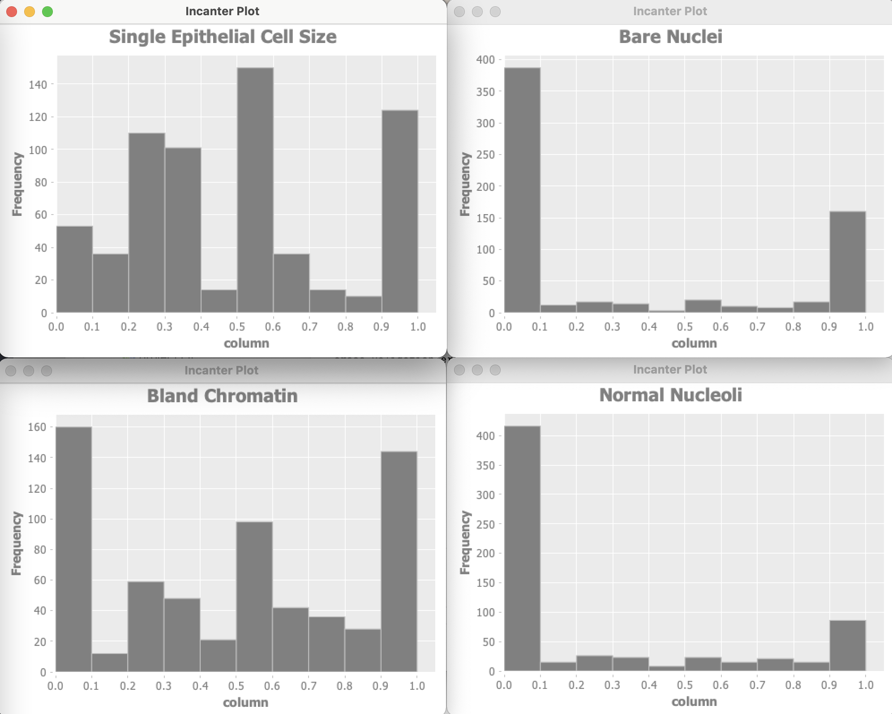

Preface
Copyright Mark Watson. All rights reserved. This book may be shared using the Creative Commons “share and share alike, no modifications, no commercial reuse” license.
The latest edition of this book is always available for purchase at https://leanpub.com/clojureai. You can also download a free copy from my website https://markwatson.com. You are welcome to take free copies of all of my eBooks and to share them. I offer the purchase option for readers who wish to directly support my work.
I have been developing commercial Artificial Intelligence (AI) tools and applications since the 1980s and I usually use the Lisp languages Common Lisp, Clojure, Racket Scheme, and Gambit Scheme. This book contains code that I wrote for myself and I am wrapping it in a book in the hopes that my code and this book will also be useful to you, dear reader.
I wrote this book for both professional programmers and home hobbyists who already know how to program in Clojure and who want to learn practical AI programming and information processing techniques. I have tried to make this an enjoyable book to work through. In the style of a “cook book,” the chapters can be studied in any order.
This book uses two of the examples in my Java AI book that is also available for purchase at Leanpub.com and as a free download from my personal web site. I replicate these two bits of Java code in the GitHub repository for this book:
https://github.com/mark-watson/Clojure-AI-Book-Code
Git pull requests with code improvements will be appreciated by me and the readers of this book.
Clojure, With Some Java and Python
To be clear, I actually like Common Lisp slightly more than Clojure, even though Clojure is a beautifully designed modern language and Common Lisp is ancient and has defects. Then why do I use Clojure? The Java ecosystem is huge and Clojure takes full advantage of Java interoperability. Just as I sometimes need access to the rich Java ecosystem I also need Python libraries for some of my projects. Here we will use the libpython-clj library for that. I also like the language Hy that has a Clojure-like syntax and wraps the Python language. If you use Python then my book A Lisp Programmer Living in Python-Land: The Hy Programming Language might be of interest.
Using the Java ecosystem is an important aspect of Clojure development and in the few cases where I use Java libraries from my Java AI book, my Clojure examples illustrate how to convert Clojure seq data to Java arrays, handle returned Java data values, etc.
Personal Artificial Intelligence Journey: or, Life as a Lisp Developer
I have been interested in AI since reading Bertram Raphael’s excellent book Thinking Computer: Mind Inside Matter in the early 1980s. I have also had the good fortune to work on many interesting AI projects including the development of commercial expert system tools for the Xerox LISP machines and the Apple Macintosh, development of commercial neural network tools, application of natural language and expert systems technology, medical information systems, application of AI technologies to Nintendo and PC video games, and the application of AI technologies to the financial markets. I have also applied statistical natural language processing techniques to analyzing social media data from Twitter and Facebook. I worked at Google on their Knowledge Graph and I managed a deep learning team at Capital One where I was awarded 55 US patents.
I enjoy AI programming, and hopefully this enthusiasm will also infect you.
Acknowledgements
I produced the manuscript for this book using the leanpub.com publishing system and I recommend leanpub.com to other authors.
Editor: Carol Watson
Thanks to the following people who found typos in this and earlier book editions: Roger Erens
Thanks to the following people who suggested improvements in this and earlier book editions: non so far.
Deep Learning Using Deeplearning4j
In the last ten years Deep Learning has been so successful for solving difficult problems in areas like image understanding and natural language processing (NLP) that many people now equate Deep Learning with AI. While I think this is a false equivalence, I have often used plain old fashioned neural networks and Deep Learning models in my work.
One limitation of conventional back propagation neural networks is that they are limited to the number of neuron layers that can be efficiently trained (the vanishing gradients problem).
Deep learning uses computational improvements to mitigate the vanishing gradient problem like using ReLu activation functions rather than the more traditional Sigmoid function, and networks called “skip connections” where some layers are initially turned off with connections skipping to the next active layer.
Modern deep learning frameworks like DeepLearning4j, TensorFlow, and PyTorch are easy to use and efficient. We use DeepLearning4j in this chapter because it is written in Java and easy to use with Clojure. In a later chapter we will use the Clojure library libpython-clj to access other deep learning-based tools like the Hugging Face Transformer models for question answering systems as well as the spaCy Python library for NLP.
I have used GAN (generative adversarial networks) models for synthesizing numeric spreadsheet data, LSTM (long short term memory) models to synthesize highly structured text data like nested JSON, and for NLP (natural language processing). Several of my 55 US patents use neural network and Deep Learning technology.
The Deeplearning4j.org Java library supports many neural network algorithms. We will look at one simple example so you will feel comfortable integrating Deeplearning4j with your Clojure projects and a later optional-reading section details other available types of models. Note that I will often refer to Deeplearning4j as DL4J.
We start with a simple example of a feed forward network using the same University of Wisconsin cancer database that we will also use later in the chapter on anomaly detection.
There is a separate repository of DL4J examples that you might want to look at since any of these Java examples that look useful for your projects can be used in Clojure using the example here to get started.
Feed Forward Classification Networks
Feed forward classification networks are a type of deep neural network that can contain multiple hidden neuron layers. In the example here the adjacent layers are fully connected (all neurons in adjacent layers are connected). The DL4J library is written to scale to large problems and to use GPUs if you have them available.
In general, simpler network architectures that can solve a problem are better than unnecessarily complicated architectures. You can start with simple architectures and add layers, different layer types, and parallel models as needed. For feed forward networks model complexity has two dimensions: the numbers of neurons in hidden layers, and the number of hidden layers. If you put too many neurons in hidden layers then the training data is effectively memorized and this will hurt performance on data samples not used in training (referred to as out of sample data). In practice, I “starve the network” by reducing the number of hidden neurons until the model has reduced accuracy on independent test data. Then I slightly increase the number of neurons in hidden layers. This technique helps avoid models simply memorizing training data (the over fitting problem).
Our example here reads the University of Wisconsin cancer training and testing data sets (lines 37-53), creates a model (lines 53-79), trains it (line 81) and tests it (lines 82-94).
You can increase the number of hidden units per layer in line 23 (something that you might do for more complex problems). To add a hidden layer you can repeat lines 68-75 (and incrementing the layer index from 1 to 2). Note that in this example, we are mostly working with Java data types, not Clojure types. In a later chapter that uses the Jena RDF/SPARQL library, we convert Java values to Clojure values.
1 (ns deeplearning-dl4j-clj.wisconsin-data
2 (:import [org.datavec.api.split FileSplit]
3 [org.deeplearning4j.datasets.datavec
4 RecordReaderDataSetIterator]
5 [org.datavec.api.records.reader.impl.csv
6 CSVRecordReader]
7 [org.deeplearning4j.nn.conf
8 NeuralNetConfiguration$Builder]
9 [org.deeplearning4j.nn.conf.layers
10 OutputLayer$Builder DenseLayer$Builder]
11 [org.deeplearning4j.nn.weights WeightInit]
12 [org.nd4j.linalg.activations Activation]
13 [org.nd4j.linalg.lossfunctions
14 LossFunctions$LossFunction]
15 [org.deeplearning4j.optimize.listeners
16 ScoreIterationListener]
17 [org.deeplearning4j.nn.multilayer
18 MultiLayerNetwork]
19 [java.io File]
20 [org.nd4j.linalg.learning.config Adam Sgd
21 AdaDelta AdaGrad AdaMax Nadam NoOp]))
22
23 (def numHidden 3)
24 (def numOutputs 1)
25 (def batchSize 64)
26
27 (def initial-seed (long 33117))
28
29 (def numInputs 9)
30 (def labelIndex 9)
31 (def numClasses 2)
32
33
34 (defn -main
35 "Using DL4J with Wisconsin data"
36 [& args]
37 (let [recordReader (new CSVRecordReader)
38 _ (. recordReader
39 initialize
40 (new FileSplit
41 (new File "data/", "training.csv")))
42 trainIter
43 (new RecordReaderDataSetIterator
44 recordReader batchSize labelIndex numClasses)
45 recordReaderTest (new CSVRecordReader)
46 _ (. recordReaderTest
47 initialize
48 (new FileSplit
49 (new File "data/", "testing.csv")))
50 testIter
51 (new RecordReaderDataSetIterator
52 recordReaderTest batchSize labelIndex
53 numClasses)
54 conf (->
55 (new NeuralNetConfiguration$Builder)
56 (.seed initial-seed)
57 (.activation Activation/TANH)
58 (.weightInit (WeightInit/XAVIER))
59 (.updater (new Sgd 0.1))
60 (.l2 1e-4)
61 (.list)
62 (.layer
63 0,
64 (-> (new DenseLayer$Builder)
65 (.nIn numInputs)
66 (.nOut numHidden)
67 (.build)))
68 (.layer
69 1,
70 (-> (new OutputLayer$Builder
71 LossFunctions$LossFunction/MCXENT)
72 (.nIn numHidden)
73 (.nOut numClasses)
74 (.activation Activation/SOFTMAX)
75 (.build)))
76 (.build))
77 model (new MultiLayerNetwork conf)
78 score-listener (ScoreIterationListener. 100)]
79 (. model init)
80 (. model setListeners (list score-listener))
81 (. model fit trainIter 10)
82 (while (. testIter hasNext)
83 (let [ds (. testIter next)
84 features (. ds getFeatures)
85 labels (. ds getLabels)
86 predicted (. model output features false)]
87 ;; 26 test samples in data/testing.csv:
88 (doseq [i (range 0 52 2)]
89 (println
90 "desired output: [" (. labels getDouble i)
91 (. labels getDouble (+ i 1)) "]"
92 "predicted output: ["
93 (. predicted getDouble i)
94 (. predicted getDouble (+ i 1)) "]"))))))
Notice that we have separate training and testing data sets. It is very important to not use training data for testing because performance on recognizing training data should always be good assuming that you have enough memory capacity in a network (i.e., enough hidden units and enough neurons in each hidden layer).
The following program output shows the target (correct output) and the output predicted by the trained model:
This is a simple example but is hopefully sufficient to get you started if you want to use DL4J in your Clojure projects. An alternative approach would be writing your model code in Java and embedding the Java code in your Clojure projects - we will see examples of this in later chapters.
Optional Material: Documentation For Other Types of DeepLearning4J Built In Layers
The documentation for the built in layer classes in DL4J is probably more than you need for now so let’s review the most other types of layers that I sometimes use. In the simple example we used in the last section we used two types of layers:
- org.deeplearning4j.nn.conf.layers.DenseLayer - maintains connections to all neurons in the previous and next layer, or it is “fully connected.”
- org.deeplearning4j.nn.conf.layers.OutputLayer - has built in behavior for starting the back propagation calculations back through previous layers.
As you build more deep learning enabled applications, depending on what requirements you have, you will likely need to use at least some of the following Dl4J layer classes:
- org.deeplearning4j.nn.conf.layers.AutoEncoder - often used to remove noise from data. Autoencoders work by making the target training output values equal to the input training values while reducing the number of neurons in the AutoEncoding layer. The layer learns a concise representation of data, or “generalizes” data by learning which features are important.
- org.deeplearning4j.nn.conf.layers.CapsuleLayer - Capsule networks are an attempt to be more efficient versions of convolutional models. Convolutional networks discard position information of detected features while capsule models maintain and use this information.
- org.deeplearning4j.nn.conf.layers.Convolution1D - one dimensional convolutional layers learn one dimensional feature detectors. Trained layers learn to recognize features but discard the information of where the feature is located. These are often used for data input streams like signal data and word tokens in natural language processing.
- org.deeplearning4j.nn.conf.layers.Convolution2D - two dimensional convolutional layers learn two dimensional feature detectors. Trained layers learn to recognize features but discard the information of where the feature is located. These are often used for recognizing if a type of object appears inside a picture. Note that features, for example representing a nose or a mouth, are recognized but their location in an input picture does not matter. For example, you could cut up an image of someone’s face, moving the ears to the picture center, the mouth to the upper left corner, etc., and the picture would still be predicted to contain a face with some probability because using soft max output layers produces class labels that can be interpreted as probabilities since the values over all output classes sum to the value 1.
- org.deeplearning4j.nn.conf.layers.EmbeddingLayer - embedding layers are used to transform input data into integer data. My most frequent use of embedding layers is word embedding where each word in training data is assigned an integer value. This data can be “one hot encoded” and in the case of processing words, if there are 5000 unique words in the training data for a classifier, then the embedding layer would have 5001 neurons, one for each word and one to represent all words not in the training data. If the word index (indexing is zero-based) is, for example 117, then the activation value for neuron at index 117 is set to one and all others in the layer are set to zero.
- org.deeplearning4j.nn.conf.layers.FeedForwardLayer - this is a super class for most specialized types of feed forward layers so reading through the class reference is recommended.
- org.deeplearning4j.nn.conf.layers.DropoutLayer - dropout layers are very useful for preventing learning new input patterns from making the network forget previously learned patterns. For each training batch, some fraction of neurons in a dropout layer are turned off and don’t update their weights during a training batch cycle. The development of using dropout was key historically for getting deep learning networks to work with many layers and large amounts of training data.
- org.deeplearning4j.nn.conf.layers.LSTM - LSTM layers are used to extend the temporal memory of what a layer can remember. LSTM are a refinement of RNN models that use an input window to pass through a data stream and the RNN model can only use what is inside this temporal sampling window.
- org.deeplearning4j.nn.conf.layers.Pooling1D - a one dimensional pooling layer transforms a longer input to a shorter output by downsampling, i.e., there are fewer output connections than input connections.
- org.deeplearning4j.nn.conf.layers.Pooling2D - a two dimensional pooling layer transforms a larger two dimensional array of data input to a smaller output two dimensional array by downsampling.
Deep Learning Wrap Up
I first used neural networks in the late 1980s for phoneme (speech) recognition, specifically using time delay neural networks and I gave a talk about it at IEEE First Annual International Conference on Neural Networks San Diego, California June 21-24, 1987. In the following year I wrote the Backpropagation neural network code that my company used in a bomb detector that we built for the FAA. Back then, neural networks were not widely accepted but in the present time Google, Microsoft, and many other companies are using deep learning for a wide range of practical problems. Exciting work is also being done in the field of natural language processing.
Later we will look at an example calling directly out to Python code using the libpython-clj library to use the spaCy natural language processing library. You can also use the libpython-clj library to access libraries like TensorFlow, PyTorch, etc. in your Clojure applications.
Natural Language Processing Using OpenNLP
Here we use the Apache OpenNLP project written in Java. OpenNLP has pre-trained models for tokenization, sentence segmentation, part-of-speech tagging, named entity extraction, chunking, parsing, and coreference resolution. Here we use a subset of OpenNLP’s functionality. My Java AI book has a more complete treatment, including building custom classification models and performing chunk-parsing of sentence structure.
Currently, OpenNLP has support for Danish, German, English, Spanish, Portuguese, and Swedish. I include in the github repository pre-trained models for English in the directory models.
Using the Clojure and Java Wrappers for OpenNLP
I won’t list the simple Java wrapper code in the directory src-java here. You might want to open the files NLP.java and Pair.java for reference:
The project.clj file shows the setup for incorporating Java code into a Clojure project:
(defproject opennlp-clj "0.1.0-SNAPSHOT"
:description "Example using OpenNLP with Clojure"
:url "http://markwatson.com"
:license
{:name
"EPL-2.0 OR GPL-2+ WITH Classpath-exception-2.0"
:url "https://www.eclipse.org/legal/epl-2.0/"}
:source-paths ["src"]
:java-source-paths ["src-java"]
:javac-options ["-target" "1.8" "-source" "1.8"]
:dependencies [[org.clojure/clojure "1.10.1"]
;from my Java AI book:
;[com.markwatson/opennlp "1.0-SNAPSHOT"]
[opennlp/tools "1.5.0"]]
:repl-options {:init-ns opennlp-clj.core})
Note the use of :java-source-paths to specify where the Java codes are stored in the project. When you use lein run to try the example, both the Java and Clojure code are compiled. When I first wrote this example, I used the maven output target for the OpenNLP example in my Java AI book. I left the dependency in this project.clj file commented out and instead added the two Java source files to this project. Copying the code into this project should make it easier for you to run this example.
In the following listing notice that I have two versions of tokenization functions:tokenize->java returns Java data structures andtokenize->seq returns a Clojure seq. The other example wrapper functions take a Java array of tokens as an argument.
1 (ns opennlp-clj.core
2 (:import (com.markwatson.opennlp NLP)))
3
4 (defn sentence-splitter
5 "tokenize entire sentences"
6 [string-input]
7 (seq (NLP/sentenceSplitter string-input)))
8
9 (defn tokenize->seq
10 "tokenize words to Clojure seq"
11 [string-input]
12 (seq (NLP/tokenize string-input)))
13
14 (defn tokenize->java
15 "tokenize words to Java array"
16 [string-input]
17 (NLP/tokenize string-input))
18
19 ;; Word analysis:
20
21 (defn POS
22 "part of speech"
23 [java-token-array]
24 (seq (NLP/POS java-token-array)))
25
26 ;; Entities:
27
28 (defn company-names
29 [java-token-array]
30 (seq (NLP/companyNames java-token-array)))
31
32 (defn location-names
33 [java-token-array]
34 (seq (NLP/locationNames java-token-array)))
35
36 (defn person-names
37 [java-token-array]
38 (seq (NLP/personNames java-token-array)))
Here I tokenize text into a Java array that is used to call the Java OpenNLP code (in the directory src-java). The first operation that you will usually start with for processing natural language text is breaking input text into individual words and sentences.
The test code for this project shows how to use these APIs:
1 (ns opennlp-clj.core-test
2 (:require [clojure.test :as test])
3 (:require [opennlp-clj.core :as onlp]))
4
5 (def
6 test-text
7 "The cat chased the mouse around the tree while Mary Sm\
8 ith (who works at IBM in San Francisco) watched.")
9
10 (test/deftest pos-test
11 (test/testing "parts of speech"
12 (let [token-java-array (onlp/tokenize->java test-text)
13 token-clojure-seq (onlp/tokenize->seq test-text)
14 words-pos (onlp/POS token-java-array)
15 companies (onlp/company-names token-java-array)
16 places (onlp/location-names token-java-array)
17 people (onlp/person-names token-java-array)]
18 (println "Input text:\n" test-text)
19 (println "Tokens as Java array:\n" token-java-array)
20 (println "Tokens as Clojure seq:\n"
21 token-clojure-seq)
22 (println "Part of speech tokens:\n" words-pos)
23 (println "Companies:\n" companies)
24 (println "Places:\n" places)
25 (println "People:\n" people)
26 (test/is (= (first words-pos) "DT")))))
Here is the test output:
The part of speech tokens like DT (determiner), NN (noun), etc. are defined in the README file for this project.
Note: my Java AI book covers OpenNLP in more depth, including how to train your own classification models.
We take a different approach to NLP in the next chapter: using the libpython-clj library to call Python NLP libraries and pre-trained deep learning models. The Python models have more functionality but the OpenNLP library is much easier to setup and use with Clojure.
Python/Clojure Interoperation Using the libpython-clj Library
In the last chapter we used the Java OpenNLP library for natural language processing (NLP). Here we take an alternative approach of using the libpython-clj library to access the spaCy NLP library implemented in Python (and the embedded compiled code written in FORTRAN and C/C++). The libpython-clj library can also be used to tap into the wealth of deep learning and numerical computation libraries written in Python. See the file INSTALL_MLW.txt for project dependencies.
This example also uses the Hugging Face Transformer models for NLP question answering.
To get started using libpython-clj I want to direct you toward two resources that you will want to familiarize yourself with:
I suggest bookmarking the libpython-clj GitHub repository for reference and treat Carin Meier’s libpython-clj examples as your main source for using a wide variety of Python libraries with libpython-clj.
Using spaCy for Natural Language Processing
spaCy is a great library that is likely all you need for processing text and NLP. spaCy is written in Python and in the past for accessing spaCy I have used the Hy language (Clojure syntax Lisp that sits on top of Python), used the py4cl library with Common Lisp, or I just used Python. The libpython-clj library now gives me a great fourth option.
Let’s start by looking at example code in a REPL session and output for this example (we will implement the code later). I reformatted the following output to fit the page width:
1 $ ~/Clojure-AI-Book-Code/nlp_libpython$ lein repl
2
3 nlp-libpython-spacy.core=> (def test-text "John Smith
4 worked for IBM in Mexico last year and earned $1
5 million in salary and bonuses.")
6 #'nlp-libpython-spacy.core/test-text
7
8 nlp-libpython-spacy.core=> (text->entities
9 test-text)
10 (["John Smith" "PERSON"] ["IBM" "ORG"] ["Mexico" "GPE"]
11 ["last year" "DATE"] ["$1 million" "MONEY"])
12
13 nlp-libpython-spacy.core=> (text->tokens-and-pos
14 test-text)
15 (["John" "PROPN"] ["Smith" "PROPN"] ["worked" "VERB"]
16 ["for" "ADP"] ["IBM" "PROPN"] ["in" "ADP"]
17 ["Mexico" "PROPN"] ["last" "ADJ"] ["year" "NOUN"]
18 ["and" "CCONJ"] ["earned" "VERB"] ["$" "SYM"]
19 ["1" "NUM"] ["million" "NUM"] ["in" "ADP"]
20 ["salary" "NOUN"] ["and" "CCONJ"] ["bonuses" "NOUN"]
21 ["." "PUNCT"])
22
23 nlp-libpython-spacy.core=> (text->pos test-text)
24 ("PROPN" "PROPN" "VERB" "ADP" "PROPN" "ADP" "PROPN"
25 "ADJ" "NOUN" "CCONJ" "VERB" "SYM" "NUM" "NUM"
26 "ADP" "NOUN" "CCONJ" "NOUN" "PUNCT")
27
28 nlp-libpython-spacy.core=> (text->tokens test-text)
29 ("John" "Smith" "worked" "for" "IBM" "in" "Mexico"
30 "last" "year" "and" "earned" "$" "1" "million"
31 "in" "salary" "and" "bonuses" ".")
The part of speech tokens are defined in the repository directory for the last chapter in the file nlp_opennlp/README.md.
Using the Hugging Face Transformer Models for Question Answering
Deep learning NLP libraries like BERT and and other types of Transformer models have changed the landscape for applications like translation and question answering. Here we use a Hugging Face Transformer Model to answer questions when provided with a block of text that contains the answer to the questions. Before looking at the code for this example, let’s look at how it is used:
1 lp-libpython-spacy.core=> (def context-text "Since last
2 year, Bill lives in Seattle. He likes to skateboard.")
3 #'nlp-libpython-spacy.core/context-text
4
5 nlp-libpython-spacy.core=> (qa
6 "where does Bill call home?"
7 context-text)
8 {'score': 0.9626545906066895, 'start': 31, 'end': 38,
9 'answer': 'Seattle'}
10
11 nlp-libpython-spacy.core=> (qa
12 "what does Bill enjoy?"
13 context-text)
14 {'score': 0.9084932804107666, 'start': 52, 'end': 62,
15 'answer': 'skateboard'}
Nice results that show the power of using publicly available pre-trained deep learning models. Notice that the model handles equating the words “likes” with “enjoy.” Similarly, the phrase “call home” is known to be similar to the word “lives.” In traditional NLP systems, these capabilities would be handled with a synonym dictionary and a lot of custom code. By training Transformer models of (potentially) hundreds of gigabytes of text, an accurate model of natural language, grammar, synonyms, different sentence structure, etc. are handled with no extra custom code. By using word, phrase, and sentence embeddings Transformer models also learn the relationships between words including multiple word meanings.
Usually the context text block that contains the information to answer queries will be a few paragraphs of text. This is a simple example containing only eleven words. When I use these Transformer models at work I typically provide a few paragraphs of text, which we will also do later in this chapter when we query the public DBPedia Knowledge Graph for context text.
Combined spaCy and Transformer Question Answering
Let’s look at two example queries: “What is the population of Paris?” and “Where does Bill Gates Work?.” Here use both the spaCy library and the Hugging Face Transformer library. We also use some material covered in detail later in the book for accessing public Knowledge Graphs to get context text for entities found in the questions we are processing.
Let’s use a REPL session to see some results (the printout of the context text is abbreviated for concision). I added a debug printout to the example code to print out the context text (this debug printout is not in the repository for the book example code):
1 lp-libpython-spacy.core=> (spacy-qa-demo 2 "what is the population of Paris?") 3 * * context text: Paris (French pronunciation: [paʁi] ()\ 4 ) is the capital and most populous city of France, with a\ 5 n estimated population of 2,150,271 residents as of 2020,\ 6 in an area of 105 square kilometres (41 square miles). S\ 7 ince the 17th century, Paris has been one of Europe's maj\
8 or centres of finance, diplomacy, commerce, fashion, scie\
9 nce and arts.
10 The City of Paris is the centre and seat of government o\
11 f the Île-de-France, or Paris Region ...
12 {'score': 0.9000497460365295, 'start': 122, 'end': 131,
13 'answer': '2,150,271'}
14 nlp-libpython-spacy.core=> (spacy-qa-demo
15 "where does Bill Gates Work?")
16 * * context text: William Henry Gates III (born October 2\
17 8, 1955) is an American business magnate, software develo\
18 per,
19 investor, and philanthropist. He is best known as the co\
20 -founder of Microsoft Corporation. During his career at M\
21 icro
22 soft, Gates held the positions of chairman, chief executi\
23 ve officer (CEO), president and chief software architect,\
24 while also being the largest individual shareholder unti\
25 l May 2014. He is one of the best-known entrepreneurs and\
26 pioneers of the microcomputer revolution of the 1970s an\
27 d 1980s.
28 {'score': 0.3064478039741516, 'start': 213, 'end': 222,
29 'answer': 'Microsoft'}This example may take longer to run because the example code is making SPARQL queries to the DBPedia public Knowledge Graph to get context text, a topic we will cover in depth later in the book.
Using libpython-clj with the spaCy and Hugging Face Transformer Python NLP Libraries
I combined the three examples we just saw in one project for this chapter. Let’s start with the project file which is largely copied from Carin Meier’s libpython-clj examples GitHub repository.
1 (defproject python_interop_deeplearning "0.1.0-SNAPSHOT"
2 :description
3 "Example using libpython-clj with spaCy"
4 :url
5 "https://github.com/gigasquid/libpython-clj-examples"
6 :license
7 {:name
8 "EPL-2.0 OR GPL-2+ WITH Classpath-exception-2.0"
9 :url "https://www.eclipse.org/legal/epl-2.0/"}
10 :jvm-opts ["-Djdk.attach.allowAttachSelf"
11 "-XX:+UnlockDiagnosticVMOptions"
12 "-XX:+DebugNonSafepoints"]
13 :plugins [[lein-tools-deps "0.4.5"]]
14 :middleware
15 [lein-tools-deps.plugin/resolve-dependencies-with-dep\
16 s-edn]
17 :lein-tools-deps/config {:config-files [:project]
18 :resolve-aliases []}
19 :mvn/repos
20 {"central" {:url "https://repo1.maven.org/maven2/"}
21 "clojars" {:url "https://clojars.org/repo"}}
22 :dependencies [[org.clojure/clojure "1.10.1"]
23 [clj-python/libpython-clj "1.37"]
24 [clj-http "3.10.3"]
25 [com.cemerick/url "0.1.1"]
26 [org.clojure/data.csv "1.0.0"]
27 [org.clojure/data.json "1.0.0"]]
28 :main ^:skip-aot nlp-libpython-spacy.core
29 :target-path "target/%s"
30 :profiles
31 {:uberjar
32 {:aot :all
33 :jvm-opts
34 ["-Dclojure.compiler.direct-linking=true"]}})
Before looking at the example code, let’s go back to a REPL session to experiment with libpython-clj Python accessor functions. In the following example we call directly into the spaCy library and we use a separate Python file QA.py to wrap the Hugging Face Transformer mode. This provides you, dear reader, with examples of both techniques I use (direct calls and using separate Python wrappers). We will list the file QA.py later.
In lines 1-8 of the example program we set up the Clojure namespace and define accessor functions for interacting with Python. Before we jump into the example code listing, I want to show you a few things in a REPL:
1 $ lein repl
2 nlp-libpython-spacy.core=> (nlp "The cat ran")
3 The cat ran
4 nlp-libpython-spacy.core=> (type (nlp "The cat ran"))
5 :pyobject
The output on line 3 prints as a string but is really a Python object (a spaCy Document) returned as a value from the wrapped nlp function. The Python dir function prints all methods and attributes of a Python object. Here, I show only four out of the eighty-eight methods and attributes on a spaCy Document object:
1 nlp-libpython-spacy.core=> (py/dir (nlp "The cat ran"))
2 ["__iter__" "lang" "sentiment" "text" "to_json" ...]
The method __iter__ is a Python iterator and allows Clojure code using libpython-clj to iterate through a Python collection using the Clojure map function as we will see in the example program. The text method returns a string representation of a spaCy Document object and we will also use text to get the print representation of spaCy Token objects.
Here we call two of the wrapper functions in our example:
1 nlp-libpython-spacy.core=> (text->tokens "the cat ran")
2 ("the" "cat" "ran")
3 nlp-libpython-spacy.core=> (text->tokens-and-pos
4 "the cat ran")
5 (["the" "DET"] ["cat" "NOUN"] ["ran" "VERB"])
Now let’s look at the listing of the example project for this chapter. The Python file QA.py loaded in line 9 will be seen later. The spaCy library requires a model file to be loaded as seen in line 11.
The combined demo that uses spaCY, the transformer model, and queries the public DBPedia Knowledge Graph is implemented in function spacy-qa-demo (lines 38-61). In line 49 we call a utility function dbpedia-get-entity-text-by-name that is described in a later chapter; for now it is enough to know that it uses the SPARQL query template in the file get_entity_text.sparql to get context text for an entity from DBPedia. This code is wrapped in the local function get-text-fn that is called for each entity name from in the natural language query.
1 (ns nlp-libpython-spacy.core
2 (:require [libpython-clj.require :refer
3 [require-python]]
4 [libpython-clj.python :as py
5 :refer
6 [py. py.-]]))
7
8 (require-python '[spacy :as sp])
9 (require-python '[QA :as qa]) ;; loads the file QA.py
10
11 (def nlp (sp/load "en_core_web_sm"))
12
13 (def test-text "John Smith worked for IBM in Mexico last \
14 year and earned $1 million in salary and bonuses.")
15
16 (defn text->tokens [text]
17 (map (fn [token] (py.- token text))
18 (nlp text)))
19
20 (defn text->pos [text]
21 (map (fn [token] (py.- token pos_))
22 (nlp text)))
23
24 (defn text->tokens-and-pos [text]
25 (map (fn [token] [(py.- token text) (py.- token pos_)])
26 (nlp text)))
27
28 (defn text->entities [text]
29 (map (fn [entity] (py.- entity label_))
30 (py.- (nlp text) ents)))
31
32 (defn qa
33 "Use Transformer model for question answering"
34 [question context-text]
35 ;; prints to stdout and returns a map:
36 (qa/answer question context-text))
37
38 (defn spacy-qa-demo [natural-language-query]
39 (let [entity-map
40 {"PERSON" "<http://dbpedia.org/ontology/Person>"
41 "ORG"
42 "<http://dbpedia.org/ontology/Organization>"
43 "GPE" "<http://dbpedia.org/ontology/Place>"}
44 entities (text->entities natural-language-query)
45 get-text-fn
46 (fn [entity]
47 (clojure.string/join
48 " "
49 (for [entity entities]
50 (kgn/dbpedia-get-entity-text-by-name
51 (first entity)
52 (get entity-map (second entity))))))
53 context-text
54 (clojure.string/join
55 " "
56 (for [entity entities]
57 (get-text-fn entity)))
58 _ (println "* * context text:" context-text)
59 answer (qa natural-language-query context-text)]
60 answer))
61
62 (defn -main
63 [& _]
64 (println (text->entities test-text))
65 (println (text->tokens-and-pos test-text))
66 (println (text->pos test-text))
67 (println (text->tokens test-text))
68 (qa "where does Bill call home?"
69 "Since last year, Bill lives in Seattle. He likes t\
70 o skateboard.")
71 (qa "what does Bill enjoy?"
72 "Since last year, Bill lives in Seattle. He likes t\
73 o skateboard.")
74 (spacy-qa-demo "what is the population of Paris?")
75 (spacy-qa-demo "where does Bill Gates Work?"))
If you lein run to run the test -main function in lines 62-75 in the last listing, you will see the sample output that we saw earlier.
This example also shows how to load (see line 9 in the last listing) the local Python file QA.py and call a function defined in the file:
1 from transformers import pipeline
2
3 qa = pipeline(
4 "question-answering",
5 model="NeuML/bert-small-cord19-squad2",
6 tokenizer="NeuML/bert-small-cord19qa"
7 )
8
9 def answer (query_text,context_text):
10 answer = qa({
11 "question": query_text,
12 "context": context_text
13 })
14 print(answer)
15 return answer
Lines 5-6 specify names for pre-trained model files that we use. In the example repository, the file INSTALL_MLW.txt shows how I installed the dependencies for this example on a Google Cloud Platform VPS. While I sometimes use Docker for projects with custom dependencies that I don’t want to install on my laptop, I often prefer using a VPS that I can start and stop when I need it.
Writing a Python wrapper that is called from your Clojure code is a good approach if, for example, you had existing Python code that uses TensorFlow or PyTorch, or there was a complete application written in Python that you wanted to use from Clojure. While it is possible to do everything in Clojure calling directly into Python libraries it is sometimes simpler to write Python wrappers that define top level functions that you need in your Clojure project.
The material in this chapter is of particular interest to me because I use both NLP and Knowledge Graph technologies in my work. With the ability to access the Python spaCY and Hugging Face Transformer models, as well as the Java Jena library for semantic web and Knowledge Graph applications (more on this topic later), Clojure is a nice language to use for my projects.
Anomaly Detection Machine Learning Example
Anomaly detection models are used in one very specific class of use cases: when you have many negative (non-anomaly) examples and relatively few positive (anomaly) examples. We can refer to this as an unbalanced training set. To try an experiment with anomaly detection we can reuse the Wisconsin data. For training we will ignore positive examples in the original data, create a model of “how things should be,” and hopefully be able to detect anomalies different from the original negative (non-malignant) examples (i.e., data samples indicating cancer malignancy).
Anomaly detection is a difficult problem. The simple approach we use assumes that each data feature has a Gaussian distribution, or can be made to look like Gaussian distribution using a data transformation; this is often done by taking the logarithm of features, as needed.
If you have a large training set of both negative and positive examples then do not use anomaly detection models. If your training examples are balanced then use a classification model as we saw earlier in the chapter Deep Learning Using Deeplearning4j.
Motivation for Anomaly Detection
When should we use anomaly detection? This is important so I am going to repeat my suggestion that you should use supervised learning algorithms like neural networks and logistic classification when there are roughly an equal number of available negative and positive examples in the training data. The University of Wisconsin cancer data set is fairly evenly split between negative and positive examples so I artificially fudged it for this example.
Anomaly detection should be used when you have many negative (“normal”) examples and relatively few positive (“anomaly”) examples. For the example in this chapter we will simulate scarcity of positive (“anomaly”) results by preparing the data using the Wisconsin cancer data as follows:
- We will split the data into training (60%), cross validation (20%) and testing (20%).
- For the training data, we will discard all but two positive (“anomaly”) examples. We do this to simulate the real world test case where some positive examples are likely to end up in the training data in spite of the fact that we would prefer the training data to only contain negative (“normal”) examples.
- We will use the cross validation data to find a good value for the epsilon meta parameter.
- After we find a good epsilon value, we will calculate the F1 measurement for the model.
Math Primer for Anomaly Detection
We are trying to model “normal” behavior and we do this by taking each feature and fitting a Gaussian (bell curve) distribution to each feature. The learned parameters for a Gaussian distribution are the mean of the data (where the bell shaped curve is centered) and the variance. You might be more familiar with the term standard deviation, \(\sigma\). Variance is defined as \( \sigma ^2\).
We will need to calculate the probability of a value x given the mean and variance of a probability distribution: \(P(x : \mu, \sigma ^2)\) where \(\mu\) is the mean and \( \sigma ^2\) is the squared variance:
$$ P(x : \mu, \sigma ^2) = \frac{1}{{\sigma \sqrt {2\pi } }}e^{{{ - \left( {x - \mu } \right)^2 } \mathord{\left/ {\vphantom {{ - \left( {x - \mu } \right)^2 } {2\sigma ^2 }}} \right. \kern-\nulldelimiterspace} {2\sigma ^2 }}} $$where \(x_i\) are the samples and we can calculate the squared variance as:
$$ \sigma^2 = \frac{\displaystyle\sum_{i=1}^{m}(x_i - \mu)^2} {m} $$We calculate the parameters of \(\mu\) and \( \sigma ^2\) for each feature. A bell shaped distribution in two dimensions is easy to visualize as is an inverted bowl shape in three dimensions. What if we have many features? Well, the math works and don’t worry about not being able to picture it in your mind.
AnomalyDetection Utility Class Written in Java
The class AnomalyDetection (from my Java AI book) in the directory src-java is fairly general purpose. I won’t list the Java code in the file AnomalyDetection.java here but please do open it in a text editor to refer to while reading this section. This Java class processes a set of training examples and for each feature calculates \(\mu\) and \( \sigma ^2\). We are also training for a third parameter: an epsilon “cutoff” value: if for a given input vector \(P(x : \mu, \sigma ^2)\) evaluates to a value greater than epsilon then the input vector is “normal”, less than epsilon implies that the input vector is an “anomaly.” The math for calculating these three features from training data is fairly easy but the code is not: we need to organize the training data and search for a value of epsilon that minimizes the error for a cross validation data set.
To be clear: we separate the input examples into three separate sets of training, cross validation, and testing data. We use the training data to set the model parameters, use the cross validation data to learn an epsilon value, and finally use the testing data to get precision, recall, and F1 scores that indicate how well the model detects anomalies in data not used for training and cross validation.
If you are interested in the Java implementation either read the source code or for more detail read the code description in my Java AI book.
Clojure Experiment for the University of Wisconsin Cancer Data Using Java Anomaly Detection Code
The example in this section loads the University of Wisconsin data and uses the Java class AnomalyDetection described in the last section to find anomalies, which for this example will be input vectors that represented malignancy in the original data. We don’t train on the non-malignancy samples.
The Wisconsin data has 9 input features and one target output. Optionally the example program can use Incanter to plot the distribution of input variables. For of these plots are shown here: 
Let’s start by looking at the project file project.clj:
1 (defproject anomaly_detection_clj "0.1.0-SNAPSHOT"
2 :description "Anomaly Detection code"
3 :url "https://markwatson.com"
4 :license
5 {:name
6 "EPL-2.0 OR GPL-2+ WITH Classpath-exception-2.0"
7 :url "https://www.eclipse.org/legal/epl-2.0/"}
8 :dependencies [[org.clojure/clojure "1.10.1"]
9 [org.apache.commons/commons-io "1.3.2"]
10 [org.clojure/data.csv "1.0.0"]
11 [incanter "1.9.3"]]
12 :source-paths ["src"]
13 :java-source-paths ["src-java"]
14 :javac-options ["-target" "1.8" "-source" "1.8"]
15 :main ^:skip-aot anomaly-detection-clj.core
16 :target-path "target/%s"
17 :profiles
18 {:uberjar
19 {:aot :all
20 :jvm-opts
21 ["-Dclojure.compiler.direct-linking=true"]}})
The example code in src/anomaly_detection/core.clj is formatted for page width in the following listing:
1 (ns anomaly-detection-clj.core
2 (:gen-class)
3 (:require clojure.pprint)
4 (:require (incanter core stats charts))
5 (:require [clojure.data.csv :as csv])
6 (:require [clojure.java.io :as io])
7 (:require [clojure.data.csv :as csv]))
8
9 (import
10 (com.markwatson.anomaly_detection AnomalyDetection))
11
12 (def GENERATE_PLOTS false)
13
14 (defn print-histogram [title values-2d index-to-display]
15 (println "** plotting:" title)
16 (let [column (for [row values-2d]
17 (nth row index-to-display))]
18 (incanter.core/view
19 (incanter.charts/histogram column
20 :title title))))
21
22 (defn data->gausian
23 "separate labeled output and then make the data look
24 more like a Gausian (bell curve shaped) distribution"
25 [vector-of-numbers-as-strings]
26 (let [v (map read-string vector-of-numbers-as-strings)
27 training-data0 (map
28 (fn [x]
29 (Math/log
30 (+ (* 0.1 x) 1.2)))
31 (butlast v))
32 ; target output should be [0,1] instead of [2,4]:
33 target-output (* 0.5 (- (last v) 2))
34 vmin (apply min training-data0)
35 vmax (apply max training-data0)
36 training-data (map
37 (fn [x]
38 (/
39 (- x vmin)
40 (+ 0.0001 (- vmax vmin))))
41 training-data0)]
42 (concat training-data [target-output])))
43
44 (defn testAD []
45 (let [ad (AnomalyDetection.)
46 cdata
47 (map
48 data->gausian
49 (with-open
50 [reader
51 (io/reader
52 "data/cleaned_wisconsin_cancer_data.csv")]
53 (doall
54 (csv/read-csv reader))))]
55 (if GENERATE_PLOTS
56 (do
57 (print-histogram "Clump Thickness" cdata 0)
58 (print-histogram
59 "Uniformity of Cell Size" cdata 1)
60 (print-histogram
61 "Uniformity of Cell Shape" cdata 2)
62 (print-histogram "Marginal Adhesion" cdata 3)
63 (print-histogram
64 "Single Epithelial Cell Size" cdata 4)
65 (print-histogram "Bare Nuclei" cdata 5)
66 (print-histogram "Bland Chromatin" cdata 6)
67 (print-histogram "Normal Nucleoli" cdata 7)
68 (print-histogram "Mitoses" cdata 8)))
69 ;; get best model parameters:
70 (let [java-cdata (into-array (map double-array cdata))
71 detector
72 (new AnomalyDetection
73 10 (- (count cdata) 1) java-cdata)]
74 (. detector train)
75 (let [test_malignant
76 (double-array [0.5 1 1 0.8 0.5 0.5 0.7 1 0.1])
77 test_benign
78 (double-array
79 [0.5 0.4 0.5 0.1 0.8 0.1 0.3 0.6 0.1])
80 malignant_result
81 (. detector isAnamoly test_malignant)
82 benign_result
83 (. detector isAnamoly test_benign)]
84 (if malignant_result
85 (println "malignant_result true")
86 (println "malignant_result false"))
87 (if benign_result
88 (println "benign_result true")
89 (println "benign_result false"))
90
91 ))))
92
93 (defn -main [& _]
94 (testAD))
Data used by an anomaly detection model should have (roughly) a Gaussian (bell curve shape) distribution. What form does the cancer data have? Unfortunately, each of the data features seems to either have a greater density at the lower range of feature values or large density at the extremes of the data feature ranges. This will cause our model to not perform as well as we would like.
I won’t do it in this example, but the feature “Bare Nuclei” should be removed because it is not even close to being a bell-shaped distribution. Another thing that you can do (recommended by Andrew Ng in his Coursera Machine Learning class) is to take the log of data and otherwise transform it to something that looks more like a Gaussian distribution.
In a real application you would drop features that you can not transform to something like a Gaussian distribution.
Here are the results of running the code as it is in the GitHub repository for this book (with some verbose output removed for brevity):
cross_validation_error_count = 75.0 for epsilon = 0.05
cross_validation_error_count = 75.0 for epsilon = 0.07
cross_validation_error_count = 75.0 for epsilon = 0.08
cross_validation_error_count = 68.0 for epsilon = 0.14
cross_validation_error_count = 113.0 for epsilon = 0.24
cross_validation_error_count = 113.0 for epsilon = 0.25
cross_validation_error_count = 113.0 for epsilon = 0.38
cross_validation_error_count = 113.0 for epsilon = 0.39
cross_validation_error_count = 113.0 for epsilon = 0.4
cross_validation_error_count = 113.0 for epsilon = 0.41
cross_validation_error_count = 113.0 for epsilon = 0.42
cross_validation_error_count = 113.0 for epsilon = 0.43
cross_validation_error_count = 113.0 for epsilon = 0.44
**** Best epsilon value = 0.15000000000000002
cross_validation_error_count = 63.0 for epsilon = 0.15\
000000000000002
-- best epsilon = 0.15000000000000002
-- number of test examples = 66
-- number of false positives = 0.0
-- number of true positives = 8.0
-- number of false negatives = 11.0
-- number of true negatives = 47.0
-- precision = 1.0
-- recall = 0.42105263157894735
-- F1 = 0.5925925925925926
malignant_result true
benign_result false
How do we evaluate these results? The precision value of 1.0 means that there were no false positives. False positives are predictions of a true result when it should have been false. The value 0.421 for recall means that of all the samples that should have been classified as positive, we only predicted about 42% of them. The F1 score is calculated as two times the product of precision and recall, divided by the sum of precision plus recall.
We used a simple approach here that has the benefit of working with small data sets. Ideally, even with highly unbalanced data sets, we would have sufficient positive examples to use deep learning to model features, data transformations, and a classification model. In many real-world problems with unbalanced data sets, sufficient data is not available.
Web Scraping
I often write software to automatically collect and use data from the web and other sources. As a practical matter, much of the data that many people use for machine learning comes from either the web or from internal data sources. This section provides some guidance and examples for getting text data from the web.
Before we start a technical discussion about web scraping I want to point out that much of the information on the web is copyright and the first thing that you should do is to read the terms of service for web sites to insure that your use of “scraped” or “spidered” data conforms with the wishes of the persons or organizations who own the content and pay to run scraped web sites.
Web Scraping Using the jsoup Library
We will use the MIT licensed Java library jsoup. One reason I selected jsoup for the examples in this chapter out of many fine libraries that provide similar functionality is the particularly nice documentation, especially The jsoup Cookbook which I urge you to bookmark as a general reference. In this chapter I will concentrate on just the most frequent web scraping use cases that I use in my own work: getting all plain text and links from a web site. It should be straightforward for you to take the following example and extend it with whatever else you may need from the jsoup Cookbook.
We need to require the jsoup dependency in the project file:
1 (defproject webscraping "0.1.0-SNAPSHOT"
2 :description "Demonstration of using Java Jsoup library"
3 :url "http://markwatson.com"
4 :license
5 {:name
6 "EPL-2.0 OR GPL-2+ WITH Classpath-exception-2.0"
7 :url "https://www.eclipse.org/legal/epl-2.0/"}
8 :dependencies [[org.clojure/clojure "1.10.1"]
9 [org.jsoup/jsoup "1.7.2"]]
10 :repl-options {:init-ns webscraping.core})
The example code for this chapter uses jsoup to get the complete plain text and also the anchor (<a href=…) data for a web page. In reading the following code let’s start at the end: lines 28-35 where we fetch data from a web site as a jsoup document object. Once we have this document object, we use the Java method text on to get plain text. On line 37 we use the utility function get-html-anchors that is defined in lines 6-23. On line 8 we search for all anchor patterns “a[href]”. For each anchor, we construct the full target URI. Lines 17-21 handle the corner case of URIs like:
1 https://example/com#faq
where we need to use a check to see if a URI starts with “http” in which case we just use the URI as is. Otherwise, treat the URI as a partial like “#faq” that is added to the base URI.
1 (ns webscraping.core
2 (:require [clojure.string :as str]))
3
4 (import (org.jsoup Jsoup))
5
6 (defn get-html-anchors [jsoup-web-page-contents]
7 (let [anchors
8 (. jsoup-web-page-contents select "a[href]")]
9 (for [anchor anchors]
10 (let [anchor-text
11 (. (first (. anchor childNodes)) text)
12 anchor-uri-base
13 (. (first (. anchor childNodes)) baseUri)
14 href-attribute
15 (. (. anchor attributes) get "href")
16 anchor-uri
17 (if (str/starts-with? href-attribute "http")
18 href-attribute
19 (str/join ""
20 [anchor-uri-base
21 (. (. anchor attributes) get "href")]))
22 furi (first (. anchor childNodes))]
23 {:text (str/trim anchor-text) :uri anchor-uri}))))
24
25 (defn fetch-web-page-data
26 "Get the <a> anchor data and full text from a web URI"
27 [a-uri]
28 (let [doc
29 (->
30 (. Jsoup connect a-uri)
31 (.userAgent
32 "Mozilla/5.0 (Macintosh; Intel Mac OS X 10.0;\
33 rv:77.0) Gecko/20100101 Firefox/77.0")
34 (.timeout 20000)
35 (.get))
36 all-page-text (. doc text)
37 anchors (get-html-anchors doc)]
38 {:page-text all-page-text :anchors anchors}))
On lines 32-33 I am setting the same user agent as my local web browser. In principle I would prefer making up a user agent name that contains my name and why I am spidering data, but in practice some web sites refuse requests from non-standard agents.
Let’s look at the test code for an example of fetching the text and links from my personal web site:
1 (ns webscraping.core-test
2 (:require [clojure.test :refer :all]
3 [clojure.pprint :as pp]
4 [webscraping.core :refer :all]))
5
6 (deftest a-test
7 (testing
8 "Fetch my website and check number of results"
9 (let [page-data
10 (fetch-web-page-data "https://markwatson.com")]
11 (pp/pprint page-data)
12 (is (= (count page-data) 2)))))
Output might look like (most of the output is not shown):
{:page-text
"Mark Watson: AI Practitioner and Lisp Hacker ...",
:anchors
({:text "Read my Blog",
:uri "https://mark-watson.blogspot.com"}
{:text "Fun stuff",
:uri "https://markwatson.com#fun"}
{:text "My Books",
:uri "https://markwatson.com#books"}
{:text "My Open Source Projects",
:uri "https://markwatson.com#opensource"}
...
{:text "leanpub",
:uri "https://leanpub.com/u/markwatson"}
{:text "GitHub",
:uri "https://github.com/mark-watson"}
{:text "LinkedIn",
:uri "https://www.linkedin.com/in/marklwatson/"}
{:text "Twitter",
:uri "https://twitter.com/mark_l_watson"}
... )}
For training data for machine learning it is useful to just grab all text on a web page and assume that common phrases dealing with web navigation, etc. will be dropped from learned models because they occur in many different training examples for different classifications.
I find the jsoup library to be robust for fetching and parsing HTML data from web pages. As we have seen it is straightforward to use jsoup in Clojure projects.
Background Material for the Semantic Web and Knowledge Graphs
We will start with a tutorial on Semantic Web data standards like RDF, RDFS, and OWL, then implement a wrapper for the Apache Jena library in the next chapter, and finally take a deeper dive into an example application in the chapter Knowledge Graph Navigator.
The scope of the Semantic Web is comprised of all public data sources on the Internet that follow specific standards like RDF. Knowledge Graphs may be large scale, as the graphs that drive Google’s and Facebook’s businesses, or they can be specific to an organization.
Notes:
- The material in this chapter is background material. If you want to jump right into code examples then proceed to the next two chapters.
- Much of the material here was derived from a similar chapter in my Java AI book.
Learning Plan
You will learn how to do the following:
- Understand RDF data formats.
- Understand SPARQL queries for RDF data stores (both local and remote).
- Use the Apache Jena library (covered in the next chapter) to use local RDF data and perform SPARQL queries.
- Use the Apache Jena library to query remote SPARQL endpoints like DBPedia and WikiData.
- Use the Apache Derby relational database to cache SPARQL remote queries for both efficiency and for building systems that may have intermittent access to the Internet (covered in the next chapter).
- Take a quick look at RDF, RDFS, and OWL reasoners.
The Semantic Web is intended to provide a massive linked set of data for use by software systems just as the World Wide Web provides a massive collection of linked web pages for human reading and browsing. The Semantic Web is like the web in that anyone can generate any content that they want. This freedom to publish anything works for the web because we use our ability to understand natural language to interpret what we read – and often to dismiss material that based upon our own knowledge we consider to be incorrect.
Semantic Web and linked data technologies are also useful for smaller amounts of data, an example being a Knowledge Graph containing information for a business. We will further explore Knowledge Graphs in the next two chapters.
The core concept for the Semantic Web is data integration and use from different sources. As we will soon see, the tools for implementing the Semantic Web are designed for encoding data and sharing data from many different sources.
I cover the Semantic Web in this book because I believe that Semantic Web technologies are complementary to AI systems for gathering and processing data on the web. As more web pages are generated by applications (as opposed to simply showing static HTML files) it becomes easier to produce both HTML for human readers and semantic data for software agents.
There are several very good Semantic Web toolkits for the Java language and platform. Here we use Apache Jena because it is what I often use in my own work and I believe that it is a good starting technology for your first experiments with Semantic Web technologies. This chapter provides an incomplete coverage of Semantic Web technologies and is intended as a gentle introduction to a few useful techniques and how to implement those techniques in Clojure (using the Java Jena libraries).
This material is just the start of a journey in understanding the technology that I think is as important as technologies like deep learning that get more public mindshare.
The following figure shows a layered hierarchy of data models that are used to implement Semantic Web applications. To design and implement these applications we need to think in terms of physical models (storage and access of RDF, RDFS, and perhaps OWL data), logical models (how we use RDF and RDFS to define relationships between data represented as unique URIs and string literals and how we logically combine data from different sources) and conceptual modeling (higher level knowledge representation and reasoning using OWL). Originally RDF data was serialized as XML data but other formats have become much more popular because they are easier to read and manually create. The top three layers in the figure might be represented as XML, or as LD-JSON (linked data JSON) or formats like N-Triples and N3 that we will use later.

RDF data is the bedrock of the Semantic Web and Knowledge Graphs.
Available Tools
Previously for Java-based semantic web projects I used the open source Sesame library for managing and querying RDF Data. Sesame is now called RDF4J and is part of the Eclipse organization’s projects.
I decided to use the Apache Jena project in this new edition because I think Jena is slightly easier to set up a light weight development environment. If you need to set up an RDF server I recommend using the open source Fuseki server which is part of the Apache Jena project. For experimenting with local Knowledge Graphs I also use the free version of GraphDB. For client applications, in the next chapter we will use a Clojure wrapper for the Jena library that works with RDF and performing SPARQL queries.
RDF: The Universal Data Format
The Resource Description Framework (RDF) is used to encode information and the RDF Schema (RDFS) facilitates using data with different RDF encodings without the need to convert one set of schemas to another. Later, using OWL, we can simply declare that one predicate is the same as another; that is, one predicate is a sub-predicate of another (e.g., a property containsCity can be declared to be a sub-property of containsPlace so if something contains a city then it also contains a place), etc. The predicate part of an RDF statement often refers to a property.
RDF data was originally encoded as XML and intended for automated processing. In this chapter we will use two simple to read formats called “N-Triples” and “N3.” Apache Jena can be used to convert between all RDF formats so we might as well use formats that are easier to read and understand. RDF data consists of a set of triple values:
- subject
- predicate
- object
Some of my work with Semantic Web technologies deals with processing news stories, extracting semantic information from the text, and storing it in RDF. I will use this application domain for the examples in this chapter and the next chapter when we implement code to automatically generate RDF for Knowledge Graphs. I deal with triples like:
- subject: a URL (or URI) of a news article.
- predicate: a relation like “containsPerson”.
- object: a literal value like “Bill Clinton” or a URI representing Bill Clinton.
In the next chapter we will use the entity recognition library we developed in an earlier chapter to create RDF from text input.
We will use either URIs or string literals as values for objects. We will always use URIs for representing subjects and predicates. In any case URIs are usually preferred to string literals. We will see an example of this preferred use but first we need to learn the N-Triple and N3 RDF formats.
I proposed the idea that RDF was more flexible than Object Modeling in programming languages, relational databases, and XML with schemas. If we can tag new attributes on the fly to existing data, how do we prevent what I might call “data chaos” as we modify existing data sources? It turns out that the solution to this problem is also the solution for encoding real semantics (or meaning) with data: we usually use unique URIs for RDF subjects, predicates, and objects, and usually with a preference for not using string literals. The definitions of predicates are tied to a namespace and later with OWL we will state the equivalence of predicates in different namespaces with the same semantic meaning. I will try to make this idea more clear with some examples and Wikipedia has a good writeup on RDF.
Any part of a triple (subject, predicate, or object) is either a URI or a string literal. URIs encode namespaces. For example, the containsPerson predicate in the last example could be written as:
http://knowledgebooks.com/ontology/#containsPerson
The first part of this URI is considered to be the namespace for this predicate “containsPerson.” When different RDF triples use this same predicate, this is some assurance to us that all users of this predicate understand the same meaning. Furthermore, we will see later that we can use RDFS to state equivalency between this predicate (in the namespace http://knowledgebooks.com/ontology/) with predicates represented by different URIs used in other data sources. In an “artificial intelligence” sense, software that we write does not understand predicates like “containsCity”, “containsPerson”, or “isLocation” in the way that a human reader can by combining understood common meanings for the words “contains”, “city”, “is”, “person”, and “location” but for many interesting and useful types of applications that is fine as long as the predicate is used consistently. We will see that we can define abbreviation prefixes for namespaces which makes RDF and RDFS files shorter and easier to read.
The Jena library supports most serialization formats for RDF:
- Turtle
- N3
- N-Triples
- NQuads
- TriG
- JSON-LD
- RDF/XML
- RDF/JSON
- TriX
- RDF Binary
A statement in N-Triple format consists of three URIs (two URIs and a string literals for the object) followed by a period to end the statement. While statements are often written one per line in a source file they can be broken across lines; it is the ending period which marks the end of a statement. The standard file extension for N-Triple format files is *.nt and the standard format for N3 format files is *.n3.
My preference is to use N-Triple format files as output from programs that I write to save data as RDF. N-Triple files don’t use any abbreviations and each RDF statement is self-contained. I often use tools like the command line commands in Jena or RDF4J to convert N-Triple files to N3 or other formats if I will be reading them or even hand editing them. Here is an example using the N3 syntax:
@prefix kb: <http://knowledgebooks.com/ontology#>
<http://news.com/201234/> kb:containsCountry "China" .
The N3 format adds prefixes (abbreviations) to the N-Triple format. In practice it would be better to use the URI http://dbpedia.org/resource/China instead of the literal value “China.”
Here we see the use of an abbreviation prefix “kb:” for the namespace for my company KnowledgeBooks.com ontologies. The first term in the RDF statement (the subject) is the URI of a news article. The second term (the predicate) is “containsCountry” in the “kb:” namespace. The last item in the statement (the object) is a string literal “China.” I would describe this RDF statement in English as, “The news article at URI http://news.com/201234 mentions the country China.”
This was a very simple N3 example which we will expand to show additional features of the N3 notation. As another example, let’s look at the case of this news article also mentioning the USA. Instead of adding a whole new statement like this we can combine them using N3 notation. Here we have two separate RDF statements:
@prefix kb: <http://knowledgebooks.com/ontology#> .
<http://news.com/201234/>
kb:containsCountry
<http://dbpedia.org/resource/China> .
<http://news.com/201234/>
kb:containsCountry
<http://dbpedia.org/resource/United_States> .
We can collapse multiple RDF statements that share the same subject and optionally the same predicate:
@prefix kb: <http://knowledgebooks.com/ontology#> .
<http://news.com/201234/>
kb:containsCountry
<http://dbpedia.org/resource/China> ,
<http://dbpedia.org/resource/United_States> .
The indentation and placement on separate lines is arbitrary - use whatever style you like that is readable. We can also add in additional predicates that use the same subject (I am going to use string literals here instead of URIs for objects to make the following example more concise but in practice prefer using URIs):
@prefix kb: <http://knowledgebooks.com/ontology#> .
<http://news.com/201234/>
kb:containsCountry "China" ,
"USA" .
kb:containsOrganization "United Nations" ;
kb:containsPerson "Ban Ki-moon" , "Gordon Brown" ,
"Hu Jintao" , "George W. Bush" ,
"Pervez Musharraf" ,
"Vladimir Putin" ,
"Mahmoud Ahmadinejad" .
This single N3 statement represents ten individual RDF triples. Each section defining triples with the same subject and predicate have objects separated by commas and ending with a period. Please note that whatever RDF storage system you use (we will be using Jena) it makes no difference if we load RDF as XML, N-Triple, or N3 format files: internally subject, predicate, and object triples are stored in the same way and are used in the same way. RDF triples in a data store represent directed graphs that may not all be connected.
I promised you that the data in RDF data stores was easy to extend. As an example, let us assume that we have written software that is able to read online news articles and create RDF data that captures some of the semantics in the articles. If we extend our program to also recognize dates when the articles are published, we can simply reprocess articles and for each article add a triple to our RDF data store using a form like:
1 @prefix kb: <http://knowledgebooks.com/ontology#> .
2
3 <http://news.com/201234/>
4 kb:datePublished
5 "2008-05-11" .
Note that I split one RDF statement across three lines (3-5) here to fit page width. The RDF statement on lines 3-5 is legal and will be handled correctly by RDF parsers. Here we just represent the date as a string. We can add a type to the object representing a specific date:
@prefix xsd: <http://www.w3.org/2001/XMLSchema#> .
@prefix kb: <http://knowledgebooks.com/ontology#> .
<http://news.com/201234/>
kb:datePublished
"2008-05-11"^^xsd:date .
Furthermore, if we do not have dates for all news articles, that is often acceptable because when constructing SPARQL queries you can match optional patterns. If for example you are looking up articles on a specific subject then some results may have a publication date attached to the results for that article and some might not. In practice RDF supports types and we would use a date type as seen in the last example, not a string. However, in designing the example programs for this chapter I decided to simplify our representation of URIs and often use string literals as simple Java strings.
Extending RDF with RDF Schema
RDF Schema (RDFS) supports the definition of classes and properties based on set inclusion. In RDFS classes and properties are orthogonal. Let’s start with looking at an example using additional namespaces:
@prefix kb: <http://knowledgebooks.com/ontology#> .
@prefix rdf: <http://www.w3.org/1999/02/22-rdf-syntax-ns\
#> .
@prefix rdfs: <http://www.w3.org/2000/01/rdf-schema#> .
@prefix dbo: <http://dbpedia.org/ontology/> .
<http://news.com/201234/>
kb:containsCountry
<http://dbpedia.org/resource/China> .
<http://news.com/201234/>
kb:containsCountry
<http://dbpedia.org/resource/United_States> .
<http://dbpedia.org/resource/China>
rdfs:label "China"@en,
rdf:type dbo:Place ,
rdf:type dbo:Country .
Because the Semantic Web is intended to be processed automatically by software systems it is encoded as RDF. There is a problem that must be solved in implementing and using the Semantic Web: everyone who publishes Semantic Web data is free to create their own RDF schemas for storing data. For example, there is usually no single standard RDF schema definition for topics like news stories and stock market data. The SKOS is a namespace containing standard schemas and the most widely used standard is schema.org. Understanding the ways of integrating different data sources using different schemas helps to understand the design decisions behind the Semantic Web applications. In this chapter I often use my own schemas in the knowledgebooks.com namespace for the simple examples you see here. When you build your own production systems part of the work is searching through schema.org and SKOS to use standard name spaces and schemas when possible because this facilitates linking your data to other RDF Data on the web. The use of standard schemas helps when you link internal proprietary Knowledge Graphs used in organization with public open data from sources like WikiData and DBPedia.
Let’s consider an example: suppose that your local Knowledge Graph referred to President Joe Biden in which case we could “mint” our own URI like:
1 https://knowledgebooks.com/person#Joe_Biden
In this case users of the local Knowledge Graph could not take advantage of connected data. For example, the DBPedia and WikiData URIs for How Biden are:
Both of these URIs can be followed by clicking on the links if you are reading a PDF copy of this book. Please “follow your nose” and see how both of these URIs resolve to human-readable web pages.
After telling you, dear reader, to always try to use public and standard URIs like the above examples for Joe Biden, I will now revert to using simple made-up URIs for the following discussion.
We will start with an example that is an extension of the example in the last section that also uses RDFS. We add a few additional RDF statements:
@prefix kb: <http://knowledgebooks.com/ontology#> .
@prefix rdfs: <http://www.w3.org/2000/01/rdf-schema#> .
kb:containsCity rdfs:subPropertyOf kb:containsPlace .
kb:containsCountry rdfs:subPropertyOf kb:containsPlace .
kb:containsState rdfs:subPropertyOf kb:containsPlace .
The last three lines declare that:
- The property containsCity is a sub-property of containsPlace.
- The property containsCountry is a sub-property of containsPlace.
- The property containsState is a sub-property of containsPlace.
Why is this useful? For at least two reasons:
- You can query an RDF data store for all triples that use property containsPlace and also match triples with properties equal to containsCity, containsCountry, or containsState. There may not even be any triples that explicitly use the property containsPlace.
- Consider a hypothetical case where you are using two different RDF data stores that use different properties for naming cities: cityName and city. You can define cityName to be a sub-property of city and then write all queries against the single property name city. This removes the necessity to convert data from different sources to use the same Schema. You can also use OWL to state property and class equivalency.
In addition to providing a vocabulary for describing properties and class membership by properties, RDFS is also used for logical inference to infer new triples, combine data from different RDF data sources, and to allow effective querying of RDF data stores. We will see examples of all of these features of RDFS when we later start using the Jena libraries to perform SPARQL queries.
The SPARQL Query Language
SPARQL is a query language used to query RDF data stores. While SPARQL may initially look like SQL, we will see that there are some important differences like support for RDFS and OWL inferencing and graph-based instead of relational matching operations. We will cover the basics of SPARQL in this section and then see more examples later when we learn how to embed Jena in Java applications, and see more examples in the last chapter Knowledge Graph Navigator.
We will use the N3 format RDF file test_data/news.n3 for the examples. I created this file automatically by spidering Reuters news stories on the news.yahoo.com web site and automatically extracting named entities from the text of the articles. We saw techniques for extracting named entities from text in earlier chapters. In this chapter we use these sample RDF files.
You have already seen snippets of this file and I list the entire file here for reference, edited to fit line width: you may find the file news.n3 easier to read if you are at your computer and open the file in a text editor so you will not be limited to what fits on a book page:
@prefix kb: <http://knowledgebooks.com/ontology#> .
@prefix rdfs: <http://www.w3.org/2000/01/rdf-schema#> .
kb:containsCity rdfs:subPropertyOf kb:containsPlace .
kb:containsCountry rdfs:subPropertyOf kb:containsPlace .
kb:containsState rdfs:subPropertyOf kb:containsPlace .
<http://yahoo.com/20080616/usa_flooding_dc_16/>
kb:containsCity "Burlington" , "Denver" ,
"St. Paul" ," Chicago" ,
"Quincy" , "CHICAGO" ,
"Iowa City" ;
kb:containsRegion "U.S. Midwest" , "Midwest" ;
kb:containsCountry "United States" , "Japan" ;
kb:containsState "Minnesota" , "Illinois" ,
"Mississippi" , "Iowa" ;
kb:containsOrganization "National Guard" ,
"U.S. Department of Agriculture",
"White House" ,
"Chicago Board of Trade" ,
"Department of Transportation" ;
kb:containsPerson "Dena Gray-Fisher" ,
"Donald Miller" ,
"Glenn Hollander" ,
"Rich Feltes" ,
"George W. Bush" ;
kb:containsIndustryTerm "food inflation", "food",
"finance ministers" ,
"oil" .
<http://yahoo.com/78325/ts_nm/usa_politics_dc_2/>
kb:containsCity "Washington" , "Baghdad" ,
"Arlington" , "Flint" ;
kb:containsCountry "United States" ,
"Afghanistan" ,
"Iraq" ;
kb:containsState "Illinois" , "Virginia" ,
"Arizona" , "Michigan" ;
kb:containsOrganization "White House" ,
"Obama administration" ,
"Iraqi government" ;
kb:containsPerson "David Petraeus" ,
"John McCain" ,
"Hoshiyar Zebari" ,
"Barack Obama" ,
"George W. Bush" ,
"Carly Fiorina" ;
kb:containsIndustryTerm "oil prices" .
<http://yahoo.com/10944/ts_nm/worldleaders_dc_1/>
kb:containsCity "WASHINGTON" ;
kb:containsCountry "United States" , "Pakistan" ,
"Islamic Republic of Iran" ;
kb:containsState "Maryland" ;
kb:containsOrganization "University of Maryland" ,
"United Nations" ;
kb:containsPerson "Ban Ki-moon" , "Gordon Brown" ,
"Hu Jintao" , "George W. Bush" ,
"Pervez Musharraf" ,
"Vladimir Putin" ,
"Steven Kull" ,
"Mahmoud Ahmadinejad" .
<http://yahoo.com/10622/global_economy_dc_4/>
kb:containsCity "Sao Paulo" , "Kuala Lumpur" ;
kb:containsRegion "Midwest" ;
kb:containsCountry "United States" , "Britain" ,
"Saudi Arabia" , "Spain" ,
"Italy" , India" ,
""France" , "Canada" ,
"Russia", "Germany", "China",
"Japan" , "South Korea" ;
kb:containsOrganization "Federal Reserve Bank" ,
"European Union" ,
"European Central Bank" ,
"European Commission" ;
kb:containsPerson "Lee Myung-bak" , "Rajat Nag" ,
"Luiz Inacio Lula da Silva" ,
"Jeffrey Lacker" ;
kb:containsCompany
"Development Bank Managing" ,
"Reuters" ,
"Richmond Federal Reserve Bank";
kb:containsIndustryTerm "central bank" , "food" ,
"energy costs" ,
"finance ministers" ,
"crude oil prices" ,
"oil prices" ,
"oil shock" ,
"food prices" ,
"Finance ministers" ,
"Oil prices" , "oil" .
Please note that in the above RDF listing I took advantage of the free form syntax of N3 and Turtle RDF formats to reformat the data to fit page width.
In the following examples, I used the library developed in the next chapter that allows us to load multiple RDF input files and then to use SPARQL queries.
We will start with a simple SPARQL query for subjects (news article URLs) and objects (matching countries) with the value for the predicate equal to containsCountry. Variables in queries start with a question mark character and can have any names:
SELECT ?subject ?object
WHERE {
?subject
<http://knowledgebooks.com/ontology#containsCountry>
?object .
}
It is important for you to understand what is happening when we apply the last SPARQL query to our sample data. Conceptually, all the triples in the sample data are scanned, keeping the ones where the predicate part of a triple is equal to http://knowledgebooks.com/ontology#containsCountry. In practice RDF data stores supporting SPARQL queries index RDF data so a complete scan of the sample data is not required. This is analogous to relational databases where indices are created to avoid needing to perform complete scans of database tables.
In practice, when you are exploring a Knowledge Graph like DBPedia or WikiData (that are just very large collections of RDF triples), you might run a query and discover a useful or interesting entity URI in the triple store, then drill down to find out more about the entity. In a later chapter Knowledge Graph Navigator we attempt to automate this exploration process using the DBPedia data as a Knowledge Graph.
We will be using the same code to access the small example of RDF statements in our sample data as we will for accessing DBPedia or WikiData.
We can make this last query easier to read and reduce the chance of misspelling errors by using a namespace prefix:
PREFIX kb: <http://knowledgebooks.com/ontology#>
SELECT ?subject ?object
WHERE {
?subject kb:containsCountry ?object .
}
We could have filtered on any other predicate, for instance containsPlace. Here is another example using a match against a string literal to find all articles exactly matching the text “Maryland.”
PREFIX kb: <http://knowledgebooks.com/ontology#>
SELECT ?subject WHERE { ?subject kb:containsState "Maryla\
nd" . }
The output is:
We can also match partial string literals against regular expressions:
PREFIX kb: <http://knowledgebooks.com/ontology#>
SELECT ?subject ?object
WHERE {
?subject
kb:containsOrganization
?object FILTER regex(?object, "University") .
}
The output is:
We might want to return all triples matching a property of containing an organization and where the object is a string containing the substring “University.” The matching statement after the FILTER check matches every triple that matches the subject in the first pattern:
PREFIX kb: <http://knowledgebooks.com/ontology#>
SELECT DISTINCT ?subject ?a_predicate ?an_object
WHERE {
?subject kb:containsOrganization ?object .
FILTER regex(?object,"University") .
?subject ?a_predicate ?an_object .
}
ORDER BY ?a_predicate ?an_object
LIMIT 10
OFFSET 5
When WHERE clauses contain more than one triple pattern to match, this is equivalent to a Boolean “and” operation. The DISTINCT clause removes duplicate results. The ORDER BY clause sorts the output in alphabetical order: in this case first by predicate (containsCity, containsCountry, etc.) and then by object. The LIMIT modifier limits the number of results returned and the OFFSET modifier sets the number of matching results to skip.
The output is:
1 http://news.yahoo.com/s/nm/20080616/ts_nm/worldleaders_tr\
2 ust_dc_1/
3 http://knowledgebooks.com/ontology#containsOrganization
4 "University of Maryland" .
5
6 http://news.yahoo.com/s/nm/20080616/ts_nm/worldleaders_tr\
7 ust_dc_1/
8 http://knowledgebooks.com/ontology#containsPerson,
9 "Ban Ki-moon" .
10
11 http://news.yahoo.com/s/nm/20080616/ts_nm/worldleaders_tr\
12 ust_dc_1/
13 http://knowledgebooks.com/ontology#containsPerson
14 "George W. Bush" .
15
16 http://news.yahoo.com/s/nm/20080616/ts_nm/worldleaders_tr\
17 ust_dc_1/
18 http://knowledgebooks.com/ontology#containsPerson
19 "Gordon Brown" .
20
21 http://news.yahoo.com/s/nm/20080616/ts_nm/worldleaders_tr\
22 ust_dc_1/
23 http://knowledgebooks.com/ontology#containsPerson
24 "Hu Jintao" .
25
26 http://news.yahoo.com/s/nm/20080616/ts_nm/worldleaders_tr\
27 ust_dc_1/
28 http://knowledgebooks.com/ontology#containsPerson
29 "Mahmoud Ahmadinejad" .
30
31 http://news.yahoo.com/s/nm/20080616/ts_nm/worldleaders_tr\
32 ust_dc_1/
33 http://knowledgebooks.com/ontology#containsPerson
34 "Pervez Musharraf" .
35
36 http://news.yahoo.com/s/nm/20080616/ts_nm/worldleaders_tr\
37 ust_dc_1/
38 http://knowledgebooks.com/ontology#containsPerson
39 "Steven Kull" .
40
41 http://news.yahoo.com/s/nm/20080616/ts_nm/worldleaders_tr\
42 ust_dc_1/
43 http://knowledgebooks.com/ontology#containsPerson
44 "Vladimir Putin" .
45
46 http://news.yahoo.com/s/nm/20080616/ts_nm/worldleaders_tr\
47 ust_dc_1/
48 http://knowledgebooks.com/ontology#containsState
49 "Maryland" .
We are finished with our quick tutorial on using the SELECT query form. There are three other query forms that I am not covering in this chapter:
- CONSTRUCT – returns a new RDF graph of query results
- ASK – returns Boolean true or false indicating if a query matches any triples
- DESCRIBE – returns a new RDF graph containing matched resources
A common SELECT matching pattern that I don’t cover in this chapter is optional.
OWL: The Web Ontology Language
We have already seen a few examples of using RDFS to define sub-properties in this chapter. The Web Ontology Language (OWL) extends the expressive power of RDFS. We now look at a few OWL examples and then look at parts of the Java unit test showing three SPARQL queries that use OWL reasoning. The following RDF data stores support at least some level of OWL reasoning:
- ProtegeOwlApis - compatible with the Protege Ontology editor
- Pellet - DL reasoner
- Owlim - OWL DL reasoner compatible with some versions of Sesame
- Jena - General purpose library
- OWLAPI - a simpler API using many other libraries
- Stardog - a commercial OWL and RDF reasoning system and datastore
- Allegrograph - a commercial RDF+ and RDF reasoning system and datastore
OWL is more expressive than RDFS in that it supports cardinality, richer class relationships, and Descriptive Logic (DL) reasoning. OWL treats the idea of classes very differently than object oriented programming languages like Java and Smalltalk, but similar to the way PowerLoom (see chapter on Reasoning) uses concepts (PowerLoom’s rough equivalent to a class). In OWL, instances of a class are referred to as individuals and class membership is determined by a set of properties that allow a DL reasoner to infer class membership of an individual (this is called entailment.)
We saw an example of expressing transitive relationships when we were using PowerLoom in the chapter on Reasoning where we defined a PowerLoom rule to express that the relation “contains” is transitive. We will now look at a similar example using OWL.
We have been using the RDF file news.n3 in previous examples and we will layer new examples by adding new triples that represent RDF, RDFS, and OWL. We saw in news.n3 the definition of three triples using rdfs:subPropertyOf properties to create a more general kb:containsPlace property:
kb:containsCity rdfs:subPropertyOf kb:containsPlace .
kb:containsCountry rdfs:subPropertyOf kb:containsPlace .
kb:containsState rdfs:subPropertyOf kb:containsPlace .
kb:containsPlace rdf:type owl:transitiveProperty .
kbplace:UnitedStates kb:containsState kbplace:Illinois .
kbplace:Illinois kb:containsCity kbplace:Chicago .
We can also infer that:
kbplace:UnitedStates kb:containsPlace kbplace:Chicago .
We can also model inverse properties in OWL. For example, here we add an inverse property kb:containedIn, adding it to the example in the last listing:
kb:containedIn owl:inverseOf kb:containsPlace .
Given an RDF container that supported extended OWL DL SPARQL queries, we can now execute SPARQL queries matching the property kb:containedIn and “match” triples in the RDF triple store that have never been asserted but are inferred by the OWL reasoner.
OWL DL is a very large subset of full OWL. From reading the chapter on Reasoning and the very light coverage of OWL in this section, you should understand the concept of class membership not by explicitly stating that an object (or individual) is a member of a class, but rather because an individual has properties that can be used to infer class membership.
The World Wide Web Consortium has defined three versions of the OWL language that are in increasing order of complexity: OWL Lite, OWL DL, and OWL Full. OWL DL (supports Description Logic) is the most widely used (and recommended) version of OWL. OWL Full is not computationally decidable since it supports full logic, multiple class inheritance, and other things that probably make it computationally intractable for all but smaller problems.
Semantic Web Wrap-up
Writing Semantic Web applications and building Knowledge Graphs is a very large topic, worthy of an entire book. I have covered in this chapter the background material for the next two chapters: writing Clojure wrappers for using the Jena library and the Knowledge Graph Navigator application.
Clojure Wrapper for the Jena RDF and SPARQL Library
If you read through the optional background material in the last chapter you have some understanding of RDF Data and SPARQL queries. If you skipped the last chapter you can still follow along with the code here.
When querying remote SPARQL endpoints like DBPedia and WikiData I often find that I repeatedly make some of the same queries many times, especially during development and testing. I have found that by caching SPARQL query results that I can greatly improve my developer experience. We will use the Apache Derby relational database (pure Java code and easy to embed in applications) for query caching.
One of the examples in the chapter Python/Clojure Interoperation Using the libpython-clj Library performed SPARQL queries using simple pure Clojure code. The Jena libraries used here provide more functionality but I use both approaches in my own work.
We declare both Jena and the Derby relational database libraries as dependencies in our project file:
1 (defproject semantic_web_jena_clj "0.1.0-SNAPSHOT"
2 :description "Clojure Wrapper for Apache Jena"
3 :url "https://markwatson.com"
4 :license
5 {:name "EPL-2.0 OR GPL-2+ WITH Classpath-exception-2.0"
6 :url "https://www.eclipse.org/legal/epl-2.0/"}
7 :source-paths ["src"]
8 :java-source-paths ["src-java"]
9 :javac-options ["-target" "1.8" "-source" "1.8"]
10 :dependencies [[org.clojure/clojure "1.10.1"]
11 [org.apache.derby/derby "10.15.2.0"]
12 [org.apache.derby/derbytools "10.15.2.0"]
13 [org.apache.derby/derbyclient
14 "10.15.2.0"]
15 [org.apache.jena/apache-jena-libs
16 "3.17.0" :extension "pom"]]
17 :repl-options {:init-ns semantic-web-jena-clj.core})
We will use the Jena library for handling RDF and SPARQL queries and the Derby database library for implementing query caching. Please note that the directory structure for this project also includes Java code that I wrote to wrap the Jena APIs for my specific needs (some files not shown for brevity):
1 $ tree
2 .
3 ├── LICENSE
4 ├── README.md
5 ├── data
6 │ ├── business.sql
7 │ ├── news.nt
8 │ ├── sample_news.nt
9 ├── pom.xml
10 ├── project.clj
11 ├── src
12 │ └── semantic_web_jena_clj
13 │ └── core.clj
14 ├── src-java
15 │ └── main
16 │ ├── java
17 │ │ └── com
18 │ │ └── markwatson
19 │ │ └── semanticweb
20 │ │ ├── Cache.java
21 │ │ ├── JenaApis.java
22 │ │ └── QueryResult.java
23 │ └── resources
24 │ └── log4j.xml
25 └── test
26 └── semantic_web_jena_clj
27 └── core_test.clj
While I expect that you will just use the Java code as is, there is one modification that you might want to make for your applications: I turned on OWL reasoning by default. If you don’t need OWL reasoning and you will be working with large numbers of RDF triples (tens of millions should fit nicely in-memory on your laptop), then you might want to change the following two lines of code in JenaApis.java by uncommenting line 2 and commenting line 4:
1 // use if OWL reasoning not required:
2 //model = ModelFactory.createDefaultModel();
3 // to use the OWL reasoner:
4 model = ModelFactory.createOntologyModel();
OWL reasoning is expensive but for small RDF Data sets you might as well leave it turned on.
I don’t list the file JenaApis.java here but you might want to have it open in an editor while reading the following listing of the Clojure code that wraps this Java code.
The Clojure wrapping functions are mostly self-explanatory. The main corner case is converting Java results from Jena to Clojure seq data structures, as we do in lines 13-14.
1 (ns semantic-web-jena-clj.core
2 (:import (com.markwatson.semanticweb JenaApis Cache
3 QueryResult)))
4
5 (defn- get-jena-api-model
6 "get a default model with OWL reasoning"
7 []
8 (new JenaApis))
9
10 (defonce model (get-jena-api-model))
11
12 (defn- results->clj [results]
13 (let [variable-list (seq (. results variableList))
14 bindings-list (seq (map seq (. results rows)))]
15 (cons variable-list bindings-list)))
16
17 (defn load-rdf-file [fpath]
18 (. model loadRdfFile fpath))
19
20 (defn query "SPARQL query" [sparql-query]
21 (results->clj (. model query sparql-query)))
22
23 (defn query-remote
24 "remote service like DBPedia, etc."
25 [remote-service sparql-query]
26 (results->clj
27 (. model queryRemote remote-service sparql-query)))
28
29 (defn query-dbpedia [sparql-query]
30 (query-remote "https://dbpedia.org/sparql"
31 sparql-query))
32
33 (defn query-wikidata [sparql-query]
34 (query-remote
35 "https://query.wikidata.org/bigdata/namespace/wdq/spa\
36 rql" sparql-query))
Here is a listing of text code that loads RDF data from a file and does a SPARQL query, SPARQL queries DBPedia, and SPARQL queries WikiData:
1 (ns semantic-web-jena-clj.core-test
2 (:require [clojure.test :refer :all]
3 [semantic-web-jena-clj.core :refer :all]))
4
5 (deftest load-data-and-sample-queries
6 (testing
7 "Load local triples files and SPARQL queries"
8 (load-rdf-file "data/sample_news.nt")
9 (let [results (query "select * { ?s ?p ?o } limit 5")]
10 (println results)
11 (is (= (count results) 6)))))
12
13 (deftest dbpedia-test
14 (testing "Try SPARQL query to DBPedia endpoint"
15 (println
16 (query-dbpedia
17 "select ?p where { <http://dbpedia.org/resource/B\
18 ill_Gates> ?p <http://dbpedia.org/resource/Microsoft> . }\
19 limit 10"))))
20
21 (deftest wikidata-test
22 (testing "Try SPARQL query to WikiData endpoint"
23 (println
24 (query-dbpedia
25 "select * where { ?subject ?property ?object . } \
26 limit 10"))))
You might question line 11: we are checking that the return values as a seq of length six while the SPARQL statement limits the returned results to five results on line 9. The “extra” result” of the first element in the seq that is a list of variable names from the SPARQL query.
Output will look like (reformatted for readability and most output is not shown):
1 ((subject property object)
2 (http://www.openlinksw.com/virtrdf-data-formats#default-\
3 iid
4 http://www.w3.org/1999/02/22-rdf-syntax-ns#type
5 http://www.openlinksw.com/schemas/virtrdf#QuadMapFormat)
6 (http://www.openlinksw.com/virtrdf-data-formats#default-\
7 iid-nullable
8 http://www.w3.org/1999/02/22-rdf-syntax-ns#type
9 http://www.openlinksw.com/schemas/virtrdf#QuadMapFormat)
10 ...
Data consists of nested lists where the first sub-list is the SPARQL query variable names, in this case: subject property object. Subsequent sub-lists are binding values for the query variables.
We will use the Jena wrapper in the next chapter.
Knowledge Graph Navigator
The Knowledge Graph Navigator (which I will often refer to as KGN) is a tool for processing a set of entity names and automatically explores the public Knowledge Graph DBPedia using SPARQL queries. I started to write KGN for my own use to automate some things I used to do manually when exploring Knowledge Graphs, and later thought that KGN might be also useful for educational purposes. KGN shows the user the auto-generated SPARQL queries so hopefully the user will learn by seeing examples. KGN uses the Clojure Jena wrapper example code from the last chapter as well the two Java classes JenaAPis and QueryResults (which wrap the Apache Jena library) that were also included in the example for the previous chapter.
Note: There are three separate examples for implementing SPARQL queries in this example:
- Use the code from the last chapter (Jena and query caching)
- Use a small standalone set of Clojure functions to access DBPedia
- Use a small standalone set of Clojure functions to access a local GraphDB RDF server with the data file dbpedia_sample.nt loaded into a graph named dbpedia.
The example code is set up to use Jena and query caching; edit the file sparql.clj to enable the other options.
I have implemented parts of KGN in several languages: Common Lisp, Java, Racket Scheme, Swift, Python, and Hy. The most full featured version of KGN, including a full user interface, is featured in my book Loving Common Lisp, or the Savvy Programmer’s Secret Weapon that you can read free online. That version performs more speculative SPARQL queries to find information compared to the example here that I designed for ease of understanding, and modification.
We will be running an example using data containing three person entities, one company entity, and one place entity. The following figure shows a very small part of the DBPedia Knowledge Graph that is centered around these entities. The data for this figure was collected by an example Knowledge Graph Creator from my Common Lisp book:
I chose to use DBPedia instead of WikiData for this example because DBPedia URIs are human readable. The following URIs represent the concept of a person. The semantic meanings of DBPedia and FOAF (friend of a friend) URIs are self-evident to a human reader while the WikiData URI is not:
I frequently use WikiData in my work and WikiData is one of the most useful public knowledge bases. I have both DBPedia and WikiData Sparql endpoints in the example code that we will look at later, with the WikiData endpoint comment out. You can try manually querying WikiData at the WikiData SPARL endpoint. For example, you might explore the WikiData URI for the person concept using:
select ?p ?o where {
<http://www.wikidata.org/entity/Q215627> ?p ?o .
} limit 10
For the rest of this chapter we will just use DBPedia or data copied from DBPedia.
After looking an interactive session using the example program for this chapter we will look at the implementation.
Entity Types Handled by KGN
To keep this example simple we handle just three entity types:
- People
- Organizations
- Places
In addition to finding detailed information for people, organizations, and places we will also search for relationships between entities. This search process consists of generating a series of SPARQL queries and calling the DBPedia SPARQL endpoint.
Before we design and write the code, I want to show you sample output for our example program:
(kgn {:People ["Bill Gates" "Steve Jobs" "Melinda Gates"]
:Organization ["Microsoft"]
:Place ["California"]})
The output (with some text shortened) is:
{:entity-summaries
(("Bill Gates"
"http://dbpedia.org/resource/Bill_Gates"
"William Henry Gates III (born October 28, 1955) is an\
American business magnate, software developer, investor,\
and philanthropist. He is best known as the co-founder o\
f Microsoft Corporation. During his career...")
("Steve Jobs"
"http://dbpedia.org/resource/Steve_Jobs"
"Steven Paul Jobs (; February 24, 1955 – October 5, 20\
11) was an American business magnate, industrial designer\
, investor, and media proprietor. He was the chairman, ch\
ief executive officer (CEO), and co-founder of Apple Inc.\
, the chairman and majority shareholder of Pixar...")
("Melinda Gates"
"http://dbpedia.org/resource/Melinda_Gates"
"Melinda Ann Gates (née French; August 15, 1964) is an\
American philanthropist and a former general manager at \
Microsoft. In 2000, she co-founded the Bill & Melinda Gat\
es Foundation with her husband Bill Gates...")
("Microsoft"
"http://dbpedia.org/resource/Microsoft"
"Microsoft Corporation () is an American multinational\
technology company with headquarters in Redmond, Washing\
ton. It develops, manufactures, licenses, supports, and s\
ells computer software...")
("California"
"http://dbpedia.org/resource/California"
"California is a state in the Pacific Region of the Un\
ited States. With 39.5 million residents across ...")),
:discovered-relationships
((["<http://dbpedia.org/resource/Bill_Gates>"
"<http://dbpedia.org/property/spouse>"
"<http://dbpedia.org/resource/Melinda_Gates>"]
["<http://dbpedia.org/resource/Melinda_Gates>"
"<http://dbpedia.org/property/spouse>"
"<http://dbpedia.org/resource/Bill_Gates>"])
(["<http://dbpedia.org/resource/Bill_Gates>"
"<http://dbpedia.org/ontology/knownFor>"
"<http://dbpedia.org/resource/Microsoft>"]
["<http://dbpedia.org/resource/Microsoft>"
"<http://dbpedia.org/property/founders>"
"<http://dbpedia.org/resource/Bill_Gates>"])
(["<http://dbpedia.org/resource/Steve_Jobs>"
"<http://dbpedia.org/ontology/birthPlace>"
"<http://dbpedia.org/resource/California>"]))}
Note that the output from the function kgn is a map containing two keys: :entity-summaries and :discovered-relationships.
KGN Implementation
The example application works processing a list or Person, Place, and Organization names. We generate SPARQL queries to DBPedia to find information about the entities and relationships between them.
Since the DBPedia queries are time consuming, I created a tiny subset of DBPedia in the file dbpedia_sample.nt and load it into a RDF data store like GraphDB or Fuseki running on my laptop. This local setup is especially helpful during development when the same queries are repeatedly used for testing. If you don’t modify the file sparql.clj then by default the public DBPedia SPARQL endpoint will be used.
The Clojure and Java files from the example in the last chapter were copied un-changed to the current example and the project.clj file contains the same dependencies as we used earlier:
1 (defproject knowledge_graph_navigator_clj "0.1.0-SNAPSHOT"
2 :description "Knowledge Graph Navigator"
3 :url "https://markwatson.com"
4 :license
5 {:name
6 "EPL-2.0 OR GPL-2+ WITH Classpath-exception-2.0"
7 :url "https://www.eclipse.org/legal/epl-2.0/"}
8 :source-paths ["src"]
9 :java-source-paths ["src-java"]
10 :javac-options ["-target" "1.8" "-source" "1.8"]
11 :dependencies [[org.clojure/clojure "1.10.1"]
12 [clj-http "3.10.3"]
13 [com.cemerick/url "0.1.1"]
14 [org.clojure/data.csv "1.0.0"]
15 [org.clojure/data.json "1.0.0"]
16 [org.clojure/math.combinatorics "0.1.6"]
17 [org.apache.derby/derby "10.15.2.0"]
18 [org.apache.derby/derbytools "10.15.2.0"]
19 [org.apache.derby/derbyclient
20 "10.15.2.0"]
21 [org.apache.jena/apache-jena-libs
22 "3.17.0" :extension "pom"]]
23 :repl-options
24 {:init-ns knowledge-graph-navigator-clj.kgn}
25 :main ^:skip-aot knowledge-graph-navigator-clj.kgn)
I copied the code from the last chapter into this project to save readers from needing to lein install the project in the last chapter. We won’t look at that code again here.
This example is contained in several source files. We will start at the low-level code in sparql.clj. You can edit lines 10-11 if you want to change which SPARQL libraries and endpoints you want to use. There are utility functions for using DBPedia (lines 13-20), the free version of GraphDB (lines 22-35), and a top level function sparql-endpoint that can be configured to use the options you can change in lines 10-11. I have a top level wrapper function sparql-endpoint so the remainder of the example works without modification with all options. Lines 52-57 is a small main function to facilitate working with this file in isolation.
1 (ns knowledge-graph-navigator-clj.sparql
2 (:require [clj-http.client :as client])
3 (:require clojure.stacktrace)
4 (:require [cemerick.url :refer (url-encode)])
5 (:require [clojure.data.csv :as csv])
6 (:require [semantic-web-jena-clj.core :as jena]))
7
8 ;; see https://github.com/mark-watson/clj-sparql
9
10 (def USE-LOCAL-GRAPHDB false)
11 (def USE-CACHING true) ;; use Jena wrapper
12
13 (defn dbpedia [sparql-query]
14 (let [q
15 (str
16 "https://dbpedia.org//sparql?output=csv&query="
17 (url-encode sparql-query))
18 response (client/get q)
19 body (:body response)]
20 (csv/read-csv body)))
21
22 (defn- graphdb-helper [host port graph-name sparql-query]
23 (let [q
24 (str host ":" port "/repositories/" graph-name
25 "?query=" (url-encode sparql-query))
26 response (client/get q)
27 body (:body response)]
28 (csv/read-csv body)))
29
30 (defn graphdb
31 ([graph-name sparql-query]
32 (graphdb-helper
33 "http://127.0.0.1" 7200 graph-name sparql-query))
34 ([host port graph-name sparql-query]
35 (graphdb-helper host port graph-name sparql-query)))
36
37 (defn sparql-endpoint [sparql-query]
38 (try
39 (if USE-LOCAL-GRAPHDB
40 (graphdb "dbpedia" sparql-query)
41 (if USE-CACHING
42 (jena/query-dbpedia sparql-query)
43 (dbpedia sparql-query)))
44 (catch Exception e
45 (do
46 (println
47 "WARNING: query failed:\n" sparql-query)
48 (println (.getMessage e))
49 (clojure.stacktrace/print-stack-trace e)
50 []))))
51
52 (defn -main
53 "SPARQL example"
54 [& _]
55 (println
56 (sparql-endpoint
57 "select * { ?s ?p ?o } limit 10")))
The next source file sparql_utils.clj contains one function that loads a SPARQL template file and performs variable substitutions from a map:
1 (ns knowledge-graph-navigator-clj.sparql-utils)
2
3 (defn sparql_template
4 "open SPARQL template file and perform
5 variable substitutions"
6 [template-fpath substitution-map]
7 (let [template-as-string (slurp template-fpath)]
8 (clojure.string/replace
9 template-as-string
10 (re-pattern
11 ; create a regex pattern of quoted replacements
12 ; separated by |
13 ; this code is derived from a stackoverflow
14 ; example by user bmillare
15 (apply
16 str
17 (interpose
18 "|"
19 (map
20 (fn [x] (java.util.regex.Pattern/quote x))
21 (keys substitution-map)))))
22 substitution-map)))
The next source file entities_by_name.clj provides the functionality of finding DBPedia entity URIs for names of entities, for example “Steve Jobs.” The heart of this functionality is one SPARQL query template that is used to look up URIs by name; in this example, the name is hard-wired to “Steve Jobs”. The file entities_by_name.sparql contains:
1 select distinct ?s ?comment where {
2 ?s <http://www.w3.org/2000/01/rdf-schema#label>
3 "<NAME>"@en .
4 ?s <http://www.w3.org/2000/01/rdf-schema#comment>
5 ?comment .
6 FILTER (lang(?comment) = "en") .
7 ?s
8 <http://www.w3.org/1999/02/22-rdf-syntax-ns#type>
9 <ENTITY_TYPE> .
10 }
The function dbpedia-get-entities-by-name takes two arguments name and dbpedia-type where name was set to “Steve Jobs” and dbpedia-type was set to the URI:
1 <http://dbpedia.org/ontology/Person>
in the SPARQL query. The FILTER statement on line 6 is used to discard all string values that are not tagged to be English language (“en”).
This SPARQL query template file is used in lines in lines 9-11:
1 (ns knowledge-graph-navigator-clj.entities-by-name
2 (:require [knowledge-graph-navigator-clj.sparql
3 :as sparql])
4 (:require [clojure.pprint :as pp])
5 (:require clojure.string))
6
7 (defn dbpedia-get-entities-by-name [name dbpedia-type]
8 (let [sparql-query
9 (utils/sparql_template
10 "entities_by_name.sparql"
11 {"<NAME>" name "<ENTITY_TYPE>" dbpedia-type})
12 results (sparql/sparql-endpoint sparql-query)]
13 results))
14
15 (defn -main
16 "test/dev entities by name"
17 [& _]
18 (println
19 (dbpedia-get-entities-by-name
20 "Steve Jobs"
21 "<http://dbpedia.org/ontology/Person>"))
22 (println
23 (dbpedia-get-entities-by-name
24 "Microsoft"
25 "<http://dbpedia.org/ontology/Organization>"))
26 (pp/pprint
27 (dbpedia-get-entities-by-name
28 "California"
29 "<http://dbpedia.org/ontology/Place>"))
30 )
The main function in lines 23-38 was useful for debugging the SPARQL query and code and I left it in the example so you can run and test this file in isolation.
The last utility function we need is defined in the source file relationships.clj that uses another SPARQL query template file. This SPARQL template file relationships.sparql contains:
1 SELECT DISTINCT ?p {
2 <URI1>
3 ?p
4 <URI2> .
5 FILTER (!regex(str(?p),"wikiPage","i"))
6 } LIMIT 5
There are three things to note here. The DISTINCT keyword removes duplicate results, In SPARQL queries URIs are enclosed in < > angle brackets but the brackets are not included in SPARQL query results so the example code adds them. Also, we are looking for all properties that link the two subject/object entity URIs except we don’t want any property URIs that provides human readable results (“follow your nose” to dereference URIs to a human readable format); these property names contain the string “wikiPage” so we filter them out of the results.
The map call on lines 13-16 is used to discard the first SPARQL query result that is a list of variable bindings from the SPARQL query.
1 (ns knowledge-graph-navigator-clj.relationships
2 (:require [knowledge-graph-navigator-clj.sparql
3 :as sparql])
4 (:require [clojure.pprint :as pp])
5 (:require clojure.string))
6
7 (defn dbpedia-get-relationships [s-uri o-uri]
8 (let [query
9 (utils/sparql_template
10 "relationships.sparql"
11 {"<URI1>" s-uri "<URI2>" o-uri})
12 results (sparql/sparql-endpoint query)]
13 (map
14 (fn [u] (clojure.string/join "" ["<" u ">"]))
15 ;;discard SPARQL variable name p (?p):
16 (second results))))
17
18 (defn entity-results->relationship-links
19 [uris-no-brackets]
20 (let [uris (map
21 (fn [u]
22 (clojure.string/join "" ["<" u ">"]))
23 uris-no-brackets)
24 relationship-statements (atom [])]
25 (doseq [e1 uris]
26 (doseq [e2 uris]
27 (if (not (= e1 e2))
28 (let [l1 (dbpedia-get-relationships e1 e2)
29 l2 (dbpedia-get-relationships e2 e1)]
30 (doseq [x l1]
31 (let [a-tuple [e1 x e2]]
32 (if (not
33 (. @relationship-statements
34 contains a-tuple))
35 (reset! relationship-statements
36 (cons a-tuple
37 @relationship-statements))
38 nil))
39 (doseq [x l2]
40 (let [a-tuple [e2 x e1]]
41 (if (not
42 (. @relationship-statements
43 contains a-tuple))
44 (reset! relationship-statements
45 (cons a-tuple
46 @relationship-statements))
47 nil)))))
48 nil)))
49 @relationship-statements))
50
51 (defn -main
52 "dev/test entity relationships code"
53 [& _]
54 (println
55 "Testing entity-results->relationship-links")
56 (pp/pprint
57 (entity-results->relationship-links
58 ["http://dbpedia.org/resource/Bill_Gates"
59 "http://dbpedia.org/resource/Microsoft"])))
The function entity-results->relationship-links (lines 18-49) takes a list of entity URIs (without the angle brackets) and if there are N input URIs it then generates SPARQL queries for all O(N^2) combinations of choosing two entities at a time.
The last source file kgn.clj contains the main function for this application. We use the Clojure library clojure.math.combinatorics to calculate all combinations of entity URIs, taken two at a time. In lines 11-17 we map entity type symbols to the DBPedia entity type URI for the symbol.
There are two parts to the main function kgn:
- Lines 24-39 collects comment descriptions for each input entity.
- Lines 40-50 find, for each entity URI pair, possible relationships between entities.
Function kgn returns a map of summaries and discovered entity relationships that we saw listed early in this chapter.
1 (ns knowledge-graph-navigator-clj.kgn
2 (:require
3 [knowledge-graph-navigator-clj.entities-by-name
4 :as entity-name])
5 (:require
6 [knowledge-graph-navigator-clj.relationships
7 :as rel])
8 (:require [clojure.math.combinatorics :as combo])
9 (:require [clojure.pprint :as pp]))
10
11 (def entity-map
12 {:People
13 "<http://dbpedia.org/ontology/Person>"
14 :Organization
15 "<http://dbpedia.org/ontology/Organization>"
16 :Place
17 "<http://dbpedia.org/ontology/Place>"})
18
19 (defn kgn
20 "Top level function for the KGN library.
21 Inputs: a map with keys Person, Place, and
22 Organization. values list of names"
23 [input-entity-map]
24 (let [entities-summary-data
25 (filter
26 ;; get rid of empty SPARQL results:
27 (fn [x] (> (count x) 1))
28 (mapcat ;; flatten just top level
29 identity
30 (for [entity-key (keys input-entity-map)]
31 (for [entity-name
32 (input-entity-map entity-key)]
33 (cons
34 entity-name
35 (second
36 (entity-name/dbpedia-get-entities-by-\
37 name
38 entity-name
39 (entity-map entity-key))))))))
40 entity-uris (map second entities-summary-data)
41 combinations-by-2-of-entity-uris
42 (combo/combinations entity-uris 2)
43 discovered-relationships
44 (filter
45 (fn [x] (> (count x) 0))
46 (for [pair-of-uris
47 combinations-by-2-of-entity-uris]
48 (seq
49 (rel/entity-results->relationship-links
50 pair-of-uris))))]
51 {:entity-summaries entities-summary-data
52 :discovered-relationships
53 discovered-relationships}))
54
55 (defn -main
56 "Main function for KGN example"
57 [& _]
58 (let [results
59 (kgn
60 {:People
61 ["Bill Gates" "Steve Jobs" "Melinda Gates"]
62 :Organization ["Microsoft"]
63 :Place ["California"]})]
64 (println " -- results:") (pp/pprint results)))
This KGN example was hopefully both interesting to you and simple enough in its implementation to use as a jumping off point for your own projects.
I had the idea for the KGN application because I was spending quite a bit of time manually setting up SPARQL queries for DBPedia (and other public sources like WikiData) and I wanted to experiment with partially automating this process. I have experimented with versions of KGN written in Java, Hy language (Lisp running on Python that I wrote a short book on), Swift, and Common Lisp and all four implementations take different approaches as I experimented with different ideas.
Using the OpenAI APIs
I have been working as an artificial intelligence practitioner since 1982 and the capability of the beta OpenAI APIs is the most impressive thing that I have seen (so far!) in my career. These APIs use the GPT-3 model.
I recommend reading the online documentation for the online documentation for the APIs to see all the capabilities of the beta OpenAI APIs. Let’s start by jumping into the example code. As seen in the src/openai_api/core.clj file we use the clj-http.client and clojure.data.json libraries:
1 (ns openai-api.core
2 (:require [clj-http.client :as client])
3 (:require [clojure.data.json :as json]))
The library that I wrote for this chapter supports three functions: for completing text, summarizing text, and answering general questions. The single OpenAI model that the beta OpenAI APIs use is fairly general purpose and can generate cooking directions when given an ingredient list, grammar correction, write an advertisement from a product description, generate spreadsheet data from data descriptions in English text, etc.
Given the examples from https://beta.openai.com and the Clojure examples here, you should be able to modify my example code to use any of the functionality that OpenAI documents.
We will look closely at the function completions and then just look at the small differences to the other two example functions. The definitions for all three exported functions are kept in the file src/openai_api/core.clj*. You need to request an API key (I had to wait a few weeks to recieve my key) and set the value of the environment variable OPENAI_KEY to your key. You can add a statement like:
export OPENAI_KEY=sa-hdffds7&dhdhsdgffd
to your .profile or other shell resource file.
While I sometimes use pure Clojure libraries to make HTTP requests, I prefer using the curl utility to experiment with API calls from the command line before starting to write any code.
An example curl command line call to the beta OpenAI APIs is:
1 curl \
2 https://api.openai.com/v1/engines/davinci/completions \
3 -H "Content-Type: application/json"
4 -H "Authorization: Bearer sa-hdffds7&dhdhsdgffd" \
5 -d '{"prompt": "The President went to Congress", \
6 "max_tokens": 22}'
Here the API token “sa-hdffds7&dhdhsdgffd” on line 4 is made up - that is not my API token. All of the OpenAI APIs expect JSON data with query parameters. To use the completion API, we set values for prompt and max_tokens. The value of max_tokens is the requested number of returns words or tokens. We will look at several examples later.
In the file src/openai_api/core.clj we start with a helper function openai-helper that takes a string with the OpenAI API call arguments encoded as a curl command, calls the service, and then extracts the results from the returned JSON data:
1 (def
2 host
3 "https://api.openai.com/v1/engines/davinci/completions")
4
5 (defn- openai-helper [body]
6 (let [json-results
7 (client/post
8 host
9 {:accept :json
10 :headers
11 {"Content-Type" "application/json"
12 "Authorization"
13 (str "Bearer "
14 (System/getenv "OPENAI_KEY"))
15 }
16 :body body
17 })]
18 ((first
19 ((json/read-str (json-results :body)) "choices"))
20 "text")))
I convert JSON data to a sequence and reach into the nested results list for the generated text string on lines 18-20. Here I am treating Clojure maps as access functions by passing a key value as an argument.
The three example functions all use this openai-helper function. The first example function completions sets the parameters to complete a text fragment. You have probably seen examples of the OpenAI GPT-3 model writing stories, given a starting sentence. We are using the same model and functionality here:
1 (defn completions
2 "Use the OpenAI API for text completions"
3 [prompt-text max-tokens]
4 (let
5 [body
6 (str
7 "{\"prompt\": \"" prompt-text "\",\"max_tokens\": "
8 (str max-tokens) "}")]
9 (openai-helper body)))
Note that the OpenAI models are stochastic. When generating output words (or tokens), the model assigns probabilities to possible words to generate and samples a word using these probabilities. As a simple example, suppose given prompt text “it fell and”, then the model could only generate three words, with probabilities for each word based on this prompt text:
- the 0.9
- that 0.1
- a 0.1
The model would emit the word the 90% of the time, the word that 10% of the time, or the word a 10% of the time. As a result, the model can generate different completion text for the same text prompt. Let’s look at some examples using the same prompt text. Notice the stochastic nature of the returned results:
1 $ lein repl
2 openai-api.core=> (openai-api.core/completions "He walked\
3 to the river" 24)
4 " and breathed in the new day, looking out to the lake wh\
5 ere the Mire was displacing the Wold by its"
6 openai-api.core=> (openai-api.core/completions "He walked\
7 to the river" 24)
8 ". He waded in, not caring about his expensive suit pants\
9 . He was going to do this right, even if"
10 openai-api.core=> (openai-api.core/completions "He walked\
11 to the river" 24)
12 " every day. The salty air puffed through their pores. He\
13 had enjoyed her company. Maybe he did need a companion"
The function summarize is very similar to the function completions except the JSON data passed to the API has a few additional parameters that let the API know that we want a text summary:
- presence_penalty - penalize words found in the original text (we set this to zero)
- temperature - higher values the randomness used to select output tokens. If you set this to zero, then the same prompt text will always yield the same results (I never use a zero value).
- top_p - also affects randomness. All examples I have seen use a value of 1.
- frequency_penalty - penalize using the same words repeatedly (I usually set this to zero, but you should experiment with different values)
When summarizing text, try varying the number of generated tokens to get shorter or longer summaries; in the following examples we ask for 24, 90, and 150 output tokens:
1 openai-api.core=> (def some-text
2 #_=> "Jupiter is the fifth planet from the\
3 Sun and the largest in the Solar System. It is a gas gia\
4 nt with a mass one-thousandth that of the Sun, but two-an\
5 d-a-half times that of all the other planets in the Solar\
6 System combined. Jupiter is one of the brightest objects\
7 visible to the naked eye in the night sky, and has been \
8 known to ancient civilizations since before recorded hist\
9 ory. It is named after the Roman god Jupiter.[19] When vi\
10 ewed from Earth, Jupiter can be bright enough for its ref\
11 lected light to cast visible shadows,[20] and is on avera\
12 ge the third-brightest natural object in the night sky af\
13 ter the Moon and Venus.")
14 #'openai-api.core/some-text
15
16 openai-api.core=> (openai-api.core/summarize some-text 24)
17 " The planet is often referred to by its Latin name, Jupi\
18 ter, or by its Greek name, Zeus.\n\nJ"
19 openai-api.core=> (openai-api.core/summarize some-text 24)
20 "\n\nJupiter is a gas giant with a radius 11 times that o\
21 f Earth. It is a ball of mostly hydrogen"
22
23 openai-api.core=> (openai-api.core/summarize some-text op\
24 enai-api.core=> (openai-api.core/summarize some-text 90)
25 "\n\nJupiter is classified as a gas giant along with Satu\
26 rn, Uranus, and Neptune. Jupiter is composed primarily of\
27 gaseous and liquid matter.[21] It is the largest of the \
28 four giant planets in the Solar System and hence its larg\
29 est planet. It has a diameter of 142,984 km at its equato\
30 r, which is 0.11 times the diameter of Earth. Jupiter is \
31 a gas giant because the mass of the planet"
32
33 openai-api.core=> (openai-api.core/summarize some-text 15\
34 0)
35 "\n\nJupiter is a gas giant, consisting mostly of hydroge\
36 n and helium. It is a giant because it is over two-and-a-\
37 half times as massive as the next-largest planet, Saturn.\
38 Jupiter is classified as a gas giant along with Saturn, \
39 Uranus, and Neptune. Jupiter is a planet because it is a \
40 body that has a solid core, a rocky mantle and a gaseous \
41 outer atmosphere. Jupiter is the largest planet in the So\
42 lar System, with a radius twice that of Earth and over 30\
43 0 times that of the Earth's Moon. It is more massive than\
44 all the other planets in our Solar System combined.\n\nJ\
45 upiter has a faint ring system, which was discovered in 1\
46 979 when the two Voyager spacecraft passed"
47 openai-api.core=>
The function answer-question is very similar to the function summarize except the JSON data passed to the API has one additional parameter that let the API know that we want a question answered:
- stop - The OpenAI API examples use the value: [\n], which is what I use here.
We also need to prepend the string “nQ: “ to the prompt text.
Additionally, the model returns a series of answers with the string “nQ:” acting as a delimiter between the answers.
1 (let [ind (clojure.string/index-of results "nQ:")]
2 (if (nil? ind)
3 results
4 (subs results 0 ind))
I strongly urge you to add a debug printout to the question answering code to print the full answer before we check for the delimiter string. For some questions, the OpenAI APIs generate a series of answers that increase in generality. In the example code we just take the most specific answer.
Let’s look at a few question answering examples and we will discuss possible problems and workarounds. The first two examples ask the same question and get back different, but reasonable answers. The third example asks a general question. The GPT-3 model is trained using a massive amount of text from the web which is why it can generate reasonable answers:
1 openai-api.core=> (openai-api.core/answer-question "Where\
2 is the Valley of Kings?" 60)
3 " It's in Egypt."
4
5 openai-api.core=> (openai-api.core/answer-question "Where\
6 is the Valley of Kings?" 60)
7 " It is located in the Valley of the Kings, near Luxor."
8
9 openai-api.core=> (openai-api.core/answer-question "Who i\
10 s Bill Clinton's wife?" 60)
11 " Hillary Clinton."
12
13 openai-api.core=> (openai-api.core/answer-question "What \
14 rivers are in Arizona?" 250)
15 " The Colorado, Verde, Salt, Gila, San Pedro, Little Colo\
16 rado, and the San Francisco."
In addition to reading the beta OpenAI API documentation you might want to read general material on the use of OpenAI’s GPT-3 model. Since the APIs we are using are beta they may change. I will update this chapter and the source code on GitHub if the APIs change.
Conclusions
The material in this book was informed by my own work interests and experiences. If you enjoyed reading this book and you make practical use of at least some of the material I covered, then I consider my effort to be worthwhile.
Writing software is a combination of a business activity, promoting good for society, and an exploration to try out new ideas for self improvement. I believe that there is sometimes a fine line between spending too many resources tracking many new technologies versus getting stuck using old technologies at the expense of lost opportunities. My hope is that reading this book was an efficient and pleasurable use of your time, letting you try some new techniques and technologies that you had not considered before.
When we do expend resources to try new things it is almost always best to perform many small experiments and then dig deeper into areas that have a good chance of providing high value and capturing your interest. I hope that I have provided you with a good road map to dig deeper into material that interests you.
If we never get to meet in person or talk on the telephone, then I would like to thank you now for taking the time to read my book.